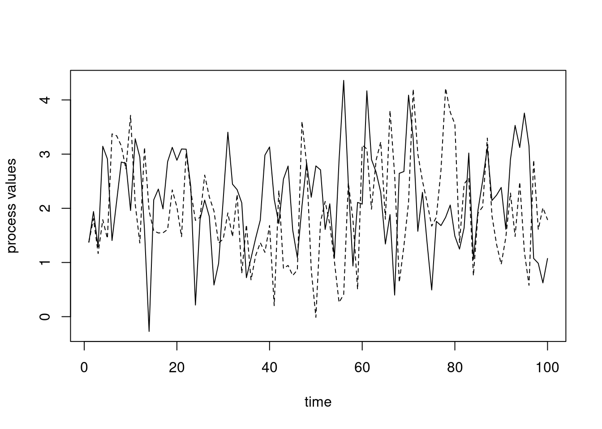
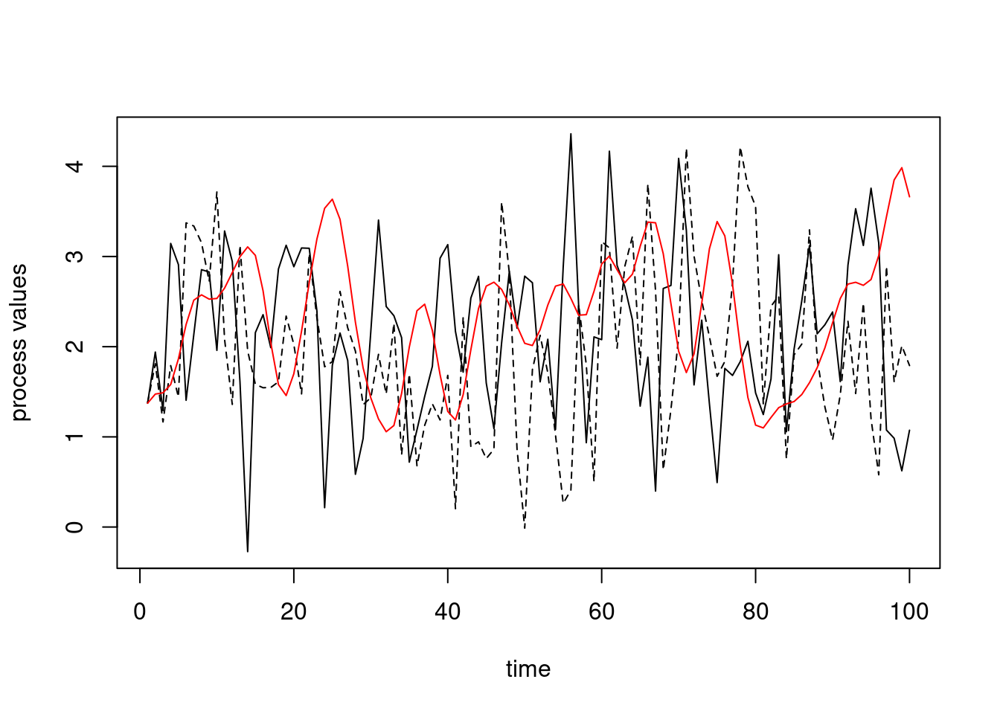

There are various videos from 2020 in the bCourses Media Gallery that you can use for reference if you want to. Note that I’ve reorganized the material in this Unit relative to 2020, so the section numbers and ordering in the videos may differ from that in the current Unit, but you should be able to match things up fairly easily.
Video 1. Strings and regular expressions
Video 3. Type/class coercion
Video 4. Object-oriented programming - S3 classes
Video 5. Object-oriented programming - R6 classes
Video 6. Nested function calls and the call stack
Video 7. Operators in R
Video 8. Unexpected functions and replacement functions
Video 13. Memory and copying
Video 9. Timing and profiling code
Video 10. Pre-allocating memory
Video 11: Variable lookup by name and hashing
Video 12: Cache-aware programming
Overview
This unit covers a variety of programming concepts, illustrated in the context of R and with comments about and connections to other languages. It also serves as a way to teach some advanced features of R. In general the concepts are relevant in other languages, though other languages may implement things differently. One of my goals for the unit is for us to think about why things are the way they are in R. I.e., what principles were used in creating the language and what choices were made? While other languages use different principles and made different choices, understanding what one language does in detail will be helpful when you are learning another language or choosing a language for a project.
I’ll likely refer to R syntax as statements or expressions, meaning any code that is a valid, complete R expression. But note that the term expression also means a specific type of object within the R language, as seen late in this Unit when we discuss computing on the language.
1. Text manipulation, string processing and regular expressions (regex)
Text manipulations in R have a number of things in common with Python, Perl, and UNIX, as many of these evolved from UNIX. When I use the term string here, I’ll be referring to any sequence of characters that may include numbers, white space, and special characters, rather than to the character class of R objects. The string or strings will generally be stored as an R character vector.
String processing and regular expressions in R
For details of string processing in R, including use of regular expressions, see the string processing tutorial. (You can ignore the sections on Python if you wish.) That tutorial then refers to the bash shell tutorial for details on regular expressions.
In class we’ll work through some problems in the string processing tutorial, focusing in particular on the use of regular expressions with the stringr package. This will augment our consideration of regular expressions in the shell, in particular by seeing how we can replace patterns in addition to finding them.
Regex/string processing challenges
We’ll work on these challenges (and perhaps one or two others) in class in the process of working through the string processing tutorial.
What regex would I use to find any number with or without a decimal place.
Suppose a text string has dates in the form “Aug-3”, “May-9”, etc. and I want them in the form “3 Aug”, “9 May”, etc. How would I do this search and replace operation? (Alternatively, how could I do this without using regular expressions at all?)
Side notes on special characters in R
Recall that when characters are used for special purposes, we need to ‘escape’ them if we want them interpreted as the actual character. In what follows, I show this in R, but similar manipulations are sometimes needed in the shell and in Python.
This can get particularly confusing in R as the backslash is also used to input special characters such as newline (\n) or tab (\t).
Here are some examples of using special characters.
Note It is hard to compile the Rmd file correctly for these R chunks, so I am just pasting in the output from running in R ‘manually’ in some cases.)
tmp <-"Harry said, \"Hi\""## cat(tmp) # prints out without a newline -- this is hard to show in the pdftmp <-"Harry said, \"Hi\".\n"cat(tmp) # prints out with the newline
Harry said, "Hi".
tmp <-c("azar", "foo", "hello\tthere\n")cat(tmp)
azar foo hello there
print(tmp)
[1] "azar" "foo" "hello\tthere\n"
grep("[\tz]", tmp) ## search for a tab or a 'z'
[1] 1 3
As a result, in R we often need two backslashes when working with regular expressions. In the next examples, the first backslash says to interpret the next backslash literally, with the second backslash being used to indicate that the caret (^) should be interpreted literally and not as a special character in the regular expression syntax.
## Search for characters that are not 'z'## (using ^ as regular expression syntax)grep("[^z]", c("a^2", "93", "zzz", "zit", "azar"))
[1] 1 2 4 5
## Search for either a '^' (as a regular charcter) or a 'z':grep("[\\^z]", c("a^2", "93", "zzz", "zit", "azar"))
[1] 1 3 4 5
## This fails (and the Rmd won't compile) because## '\^' is not an escape sequence (i.e., a special character):## grep("[\^z]", c("a^2", "93", "zit", "azar", "zzz"))## Error: '\^' is an unrecognized escape in character string starting ""[\^"## Search for exactly three characters## (using . as regular expression syntax)grep("^.{3}$", c("abc", "1234", "def"))
[1] 1 3
## Search for a period (as a regular character)grep("\\.", c("3.9", "27", "4.2"))
[1] 1 3
## This fails (and the Rmd won't compile) because ## '\.' is not an escape sequence (i.e., a special character):## grep("\.", c("3.9", "27")))## Error: '\.' is an unrecognized escape in character string starting ""\."
Challenge Explain why we use a single backslash to get a newline and double backslash to write out a Windows path in the examples here:
## Suppose we want to use a \ in our string:cat("hello\nagain")
hello
again
cat("hello\\nagain")
hello\nagain
cat("My Windows path is: C:\\Users\\My Documents.")
My Windows path is: C:\Users\My Documents.
For more information, see ?Quotes in R and the subsections of the string processing tutorial that discuss backslashes and escaping.
Advanced note: Searching for an actual backslash gets even more complicated, because we need to pass two backslashes as the regular expression, so that a literal backslash is searched for. However, to pass two backslashes, we need to escape each of them with a backslash so R doesn’t treat each backslash as part of a special character. So that’s four backslashes to search for a single backslash! Yikes. One rule of thumb is just to keep entering backslashes until things work!
## Search for an actual backslashtmp <-"something \\ other\n"cat(tmp)
something \ other
grep("\\\\", tmp)
[1] 1
try(grep("\\", tmp))
Warning in grep("\\", tmp): TRE pattern compilation error 'Trailing backslash'
Warning Be careful when cutting and pasting from documents that are not text files as you may paste in something that looks like a single or double quote, but which R cannot interpret as a quote because it’s some other ASCII quote character. If you paste in a ” from PDF, it will not be interpreted as a standard R double quote mark.
Similar things come up in the shell and in Python, but in the shell you often don’t need two backslashes. E.g. you could do this to look for a literal ^ character.
grep'\^' file.txt
2. Interacting with the operating system and external code and configuring R
Interacting with the operating system
Scripting languages allow one to interact with the operating system in various ways. Most allow you to call out to the shell to run arbitrary shell code and save results within your session.
I’ll assume everyone knows about the following functions/functionality for interacting with the filesystem and file in R: getwd, setwd, source, pdf, save, save.image, load.
To run UNIX commands from within R, use system(), as follows, noting that we can save the result of a system call to an R object:
system("ls -al") ## results apparently not shown when compiled...files <-system("ls", intern =TRUE)files[1:5]
It’s best if you can to write your code in a way that is agnostic to the underlying operating system.
To get some info on the system you’re running on:
Sys.info()
sysname
"Linux"
release
"5.4.0-120-generic"
version
"#136-Ubuntu SMP Fri Jun 10 13:40:48 UTC 2022"
nodename
"smeagol"
machine
"x86_64"
login
"paciorek"
user
"paciorek"
effective_user
"paciorek"
Controlling the behavior of R
Scripting languages generally allow you to control/customize their behavior in various ways by setting options.
To see some of the options that control how R behaves, try the options function. The width option changes the number of characters of width printed to the screen, while max.print revents too much of a large object from being printed to the screen.
## options() # this would print out a long list of optionsoptions()[1:4]
## Often it's nice to have more characters in each line on the screen,## but that would cause overly lines in the compiled file.## options(width = 120)options(max.print =5000)
The digits option changes the number of digits of numbers printed to the screen (but be careful as this can be deceptive if you then try to compare two numbers based on what you see on the screen).
options(digits =3)a <-0.123456; b <-0.1234561a; b; a == b
[1] 0.123
[1] 0.123
[1] FALSE
More on how to (and how not to) compare real-valued numbers on a computer in Unit 8.
Use Ctrl-C to interrupt execution. This will generally back out gracefully, returning you to a state as if the command had not been started. Note that if R is exceeding the amount of memory available, there can be a long delay. This can be frustrating, particularly since a primary reason you would want to interrupt is when R runs out of memory.
sessionInfo gives information on the current R session and can be very helpful for recording the state of your session (including package versions) to allow for reproducibility.
Any code that you wanted executed automatically when starting R can be placed in ~/.Rprofile (or in individual, project-specific .Rprofile files in specific directories). This could include loading packages (see below), sourcing files that contain user-defined functions that you commonly use (you can also put the function code itself in .Rprofile), assigning variables, and specifying options via options().
You can have an R script act as a shell script (like running a bash shell script) as follows. This will probably on work on Linux and Mac.
Write your R code in a text file, say exampleRscript.R.
As the first line of the file, include #!/usr/bin/Rscript (like #!/bin/bash in a bash shell file, as seen in Unit 2) or for more portability across machines, include #!/usr/bin/env Rscript.
Make the R code file executable with chmod: chmod ugo+x exampleRscript.R.
Run the script from the command line: ./exampleRscript.R
If you want to pass arguments into your script, you can do so as long as you set up the R code to interpret the incoming arguments:
args <-commandArgs(TRUE)## Now args is a character vector containing the arguments.## Suppose the first argument should be interpreted as a number ## and the second as a character string and the third as a boolean:numericArg <-as.numeric(args[1])charArg <- args[2]logicalArg <-as.logical(args[3])cat("First arg is: ", numericArg, "; second is: ", charArg, "; third is: ", logicalArg, ".\n")
Now we can run it as follows in the shell:
./exampleRscript.R 53 blah T./exampleRscript.R blah 22.5 t
First arg is: 53 ; second is: blah ; third is: TRUE .
Warning message:
NAs introduced by coercion
First arg is: NA ; second is: 22.5 ; third is: NA .
Interacting with external code
Scripting languages such as R, Python, and Julia allow you to call out to “external code”, which often means C or C++ (but also Fortran, Java and other languages).
In fact, the predecessor language to R, which was called ‘S’ was developed specifically (at AT&T’s Bell Labs in the 1970s and 1980s) as an interactive wrapper around Fortran, the numerical programming language most commonly used at the time (and still widely relied on today in various legacy codes).
Calling out to external code is particularly important in languages like R and Python that are often much slower than compiled code and less important in a fast language like Julia (which uses Just-In-Time compilation – more on that later).
In R, one can call directly out to C or C++ code using .Call or one can use the Rcpp package. Rcpp is specifically designed to be able to write C++ code that feels somewhat like writing R code and where it is very easy to pass data between R and C++.
In Python, one can directly call out to C or C++ code or one can use Cython to interact with C. With Cython, one can: - Have Cython automatically translate Python code to C, if you provide type definitions for your variables. - Define C functions that can be called from your Python code.
3. Packages and namespaces
Scripting languages that become popular generally have an extensive collection of add-on packages available online (the causal relationship of the popularity and the extensive add-on packages goes in both directions). Packages need to be installed (once) on your computer and loaded (every time you start a new session).
A big part of R’s popularity is indeed the extensive collection of add-on packages on CRAN (and GitHub and elsewhere) that provide much of R’s functionality. To make use of a package it needs to be installed on your system (using install.packages once only) and loaded into R (using library every time you start R).
Some packages are installed by default with R and of these, some are loaded by default, while others require a call to library.
If you want to sound like an R expert, make sure to call them packages and not libraries. A library is the location in the directory structure where the packages are installed/stored.
Loading packages
You can use library to either (1) make a package available (loading it), (2) get an overview of the package, or (3) (if called without arguments) to see all the installed packages.
library(dplyr) # load the packagelibrary(help = dplyr) # get some help info about the package
Packages in R (and in Python, Julia, etc.) may be installed in various places on the filesystem, and it sometimes it is helpful (e.g., if you end up with multiple versions of a package installed on your system) to be able to figure out where on the filesystem the package is being loaded from. If you run library(), you’ll notice that some of the packages are in a system directory and some are in your home directory.
.libPaths() shows where R looks for packages on your system and searchpaths() shows where individual packages currently loaded in your session have been loaded from. The help information for .libPaths gives some information about how R decides what locations to look in for packages (and how you can modify that).
If a package is on CRAN but not on your system, you can install it easily (usually). You don’t need root permission on a machine to install a package (though sometimes you run into hassles if you are installing it just as a user, so if you have administrative privileges it may help to use them). Of course in RStudio, you can install via the GUI.
Packages often depend on other packages. In general, if one package depends on another, R will install the dependency automatically, but sometimes you’ll need to install a dependency yourself. In general, package dependencies are handled very cleanly in R without you having having to worry much about it; this is less the case in Python.
Note that R will generally install the package in a reasonable place by default but you can control where it is installed using the lib argument.
install.packages('dplyr', lib ='~/Rlibs') # ~/Rlibs needs to exist!
You can also download the zipped source file from CRAN and install from the file; see the help page for install.packages. This is called “installing from source”. On Windows and Mac, you’ll need to do something like this:
install.packages('dplyr_VERSION.tar.gz', repos =NULL, type ='source')
This can be handy if you need to install an older version of a package for reproducibility or because of some dependency incompatibility.
If you’ve downloaded the binary package (files ending in .tgz for Mac and .zip for Windows) and want to install the package directly from the file, use the syntax above but omit the type= 'source' argument.
Source vs. binary packages
The difference between a source package and a binary package is that the source package has the raw R (and C and Fortran, in some cases) code as text files while the binary package has all the code in a binary/non-text format, including that any C and Fortran code will have already been compiled. To install a source package with C or Fortran code in it, you’ll need to have developer/command-line tools (e.g., XCode on Mac or Rtools.exe on Windows) installed on your system so that you have a compiler.
Managing packages using package managers
For reproducibility, it’s important to know the versions of the packages you use (and the version of R). Package managers make it easy to do this. Some useful packages that do package management in R are checkpoint, renv, and packrat. The basic commonality is that they try to make it easy to ‘freeze’ the versions of hte packages you are using, record that information, and restore the versions (potentially on some other machine and by some user other than yourself). The package manager may tell you where the packages are installed, but you can always verify things with .libPaths().
In Python, you can set up and manage isolated environments in which you can control the package versions using virtualenvs or Conda environments.
Package namespaces
The objects in a package (primarily functions, but also data) are in their own workspaces, and are accessible after you load the package using library(), but are not directly visible when you use ls(). In other words, each package has its own namespace. Namespaces help achieve modularity and avoid having zillions of objects all reside in your workspace. If we want to see the objects in a package’s namespace, we can do the following:
We’ll talk more about namespaces when we talk about variable scope and environments. But as some motivation for why this is useful, consider the following.
The lm function calls the lm.fit function to calculate the least squares solution in regression.
Suppose we write our own lm.fit function that does something else:
lm.fit <-function(x)print('hi')x <-7lm.fit(x)
[1] "hi"
One might expect that if one now uses lm() to fit a regression, that it wouldn’t work correctly because we have an lm.fit function in our workspace that doesn’t calculate the least squares solution. But it works just fine (see below), because lm and lm.fit are in the stats package namespace (see above) and R’s scoping rules (more later) ensure that the lm.fit that is found when I run lm is the lm.fit needed to run the regression and not my silly lm.fit function in current workspace.
n <-10x <-runif(n)y <-runif(n)mod <-lm(y ~ x)mod
Call:
lm(formula = y ~ x)
Coefficients:
(Intercept) x
0.5187 0.0753
Namespace resolution
Standard practice in R has generally been to load a package and then use any of the items in the package namespace directly, e.g.,
However, particularly if you’re using the package in only a limited way, it can be a nice idea to not load the entire package and instead use the namespace resolution operator in a style that might remind you of Python and some other languages:
stringr::str_detect("hello there", "hello")
[1] TRUE
import numpy as npx = np.ndarray([0,3,5])
Of course in Python you could also load the entire package (i.e., import the entire namespace), though it’s not standard practice:
from numpy import*## OR: from numpy import ndarrayx = ndarray([0,3,5])
Loading entire packages often causes ‘name collisions’ where there are multiple functions (or variables, more genreally) that have the same name. This can be confusing. We’ll see how R determines what function to use later in the Unit.
We’ll also see more complicated data structures when we consider objects in the next section on object-oriented programming.
Types and classes
Overview and static vs. dynamic typing
The term ‘type’ refers to how a given piece of information is stored and what operations can be done with the information. ‘Primitive’ types are the most basic types that often relate directly to how data are stored in memory or on disk (e.g., boolean, integer, numeric (real-valued, aka double or floating point), character, pointer (aka address, reference).
In compiled languages like C and C++, one has to define the type of each variable. Such languages are statically typed. Interpreted (or scripting) languages such as Python and R have dynamic types. One can associate different types of information with a given variable name at different times and without declaring the type of the variable:
x <-'hello'print(x)
[1] "hello"
x <-7x*3
[1] 21
In contrast in a language like C, one has to declare a variable based on its type before using it:
double y;
double x = 3.1;
y = x * 7.1;
Dynamic typing can be quite helpful from the perspective of quick implementation and avoiding tedious type definitions and problems from minor inconsistencies between types (e.g., multiplying an integer by a real-valued number). But static typing has some critical advantages from the perspective of software development, including:
protecting against errors from mismatched values and unexpected user inputs, and
generally much faster execution because the type of a variable does not need to be checked when the code is run.
More complex types in R (and in Python) often use references (pointers, aka addresses) to the actual locations of the data. We’ll see this in detail later in the Unit.
Types and classes in R
You should be familiar with vectors as the basic data structure in R, with character, integer, numeric, etc. classes. Vectors are either atomic vectors or lists. Atomic vectors generally contain one of the four following types: logical, integer, double (i.e., numeric), and character.
Everything in R is an object and all objects have a class. For simple objects class and type are often closely related, but this is not the case for more complicated objects. As we’ll see later in the Unit, the class describes what the object contains and standard functions associated with it. In general, you mainly need to know what class an object is rather than its type.
Note You can look at Table 7.1 in the Adler book to see some other types.
Let’s look at the type and class of various data structures in R. We’ll first see that real-valued are stored as double-precision (8 byte) floating point numbers internally in R (as ‘doubles’ in C, as the R interpreter is a program written in C).
devs <-rnorm(5)class(devs)
[1] "numeric"
typeof(devs)
[1] "double"
a <-data.frame(x =1:2)class(a)
[1] "data.frame"
typeof(a)
[1] "list"
is.data.frame(a)
[1] TRUE
is.matrix(a)
[1] FALSE
is(a, "matrix")
[1] FALSE
m <-matrix(1:4, nrow =2) class(m)
[1] "matrix" "array"
typeof(m)
[1] "integer"
In most cases integer-valued numbers are stored as numeric values in R, but there are exceptions such as the result of using the sequence operater, :, above. We can force R to store values as integers:
vals <-c(1, 2, 3)class(vals)
[1] "numeric"
vals <-1:3class(vals)
[1] "integer"
vals <-c(1L, 2L, 3L)vals
[1] 1 2 3
class(vals)
[1] "integer"
Attributes
We saw the notion of attributes when looking at HTML and XML, where the information was stored as key-value pairs that in many cases had additional information in the form of attributes.
In R, attributes are information about an object attached to an object as something that looks like a named list. Attributes are often copied when operating on an object. This can lead to some weird-looking formatting when in subsequent operations the names attribute is carried along:
x <-rnorm(10*365)attributes(x)
NULL
qs <-quantile(x, c(.025, .975))attributes(qs)
$names
[1] "2.5%" "97.5%"
qs
2.5% 97.5%
-1.96 2.03
qs[1] +3
2.5%
1.04
object.size(qs)
352 bytes
We can get rid of the attribute:
names(qs) <-NULLqs
[1] -1.96 2.03
object.size(qs)
64 bytes
A common use of attributes is that rows and columns may be named in matrices and data frames, and elements in vectors:
vec <-c(first =7, second =1, third =5)vec['first']
first
7
attributes(vec)
$names
[1] "first" "second" "third"
Converting between types
This also goes by the term coercion and casting. Casting often needs to be done explicitly in compiled languages and somewhat less so in interpreted languages like R.
We convert between classes using variants on as: e.g.,
as.character(c(1,2,3))
[1] "1" "2" "3"
as.numeric(c("1", "2.73"))
[1] 1.00 2.73
as.factor(c("a", "b", "c"))
[1] a b c
Levels: a b c
Some common conversions are converting numbers that are being interpreted as characters into actual numbers, converting between factors and characters, and converting between logical TRUE/FALSE vectors and numeric 1/0 vectors.
In some cases R will automatically do conversions behind the scenes in a smart way (or occasionally not so smart way). Consider these examples of implicit coercion:
x <-rnorm(5)x[3] <-'hat'# What do you think is going to happen?indices <-c(1, 2.73)myVec <-1:10myVec[indices]
[1] 1 2
Here’s an example we can work through that will help illustrate how type conversions occur behind the scenes in R.
n <-5df <-data.frame(label =rep('a', n), val1 =rnorm(n), val2 =rnorm(n))df
label val1 val2
1 a -0.325 -1.068
2 a -1.184 0.606
3 a -0.870 1.215
4 a 0.735 -1.430
5 a 1.097 -0.262
## Why does the following not work?try( apply(df, 1, function(x) x[2] + x[3]) )
Error in x[2] + x[3] : non-numeric argument to binary operator
## Instead, this will work. Why?apply(df[ , 2:3], 1, function(x) x[1] + x[2])
What has gone wrong and how does it relate to type coercion?
Data frames and related concepts
Some notes on data frames and operations on data frames
Base R provides a variety of functions for manipulating data frames, but now many researchers use add-on packages (many written by Hadley Wickham as part of a group of packages called the tidyverse) to do these manipulations in a more elegant way. Module 6 of the R bootcamp describes some of these new tools in more details, but I’ll touch on some aspects of this here, without showing much of the tidyverse syntax.
split-apply-combine
Often analyses are done in a stratified fashion - the same operation or analysis is done on subsets of the data set. The subsets might be different time points, different locations, different hospitals, different people, etc.
The split-apply-combine framework is intended to operate in this kind of context: first one splits the dataset by one or more variables, then one does something to each subset, and then one combines the results. The dplyr package implements this framework (as does the pandas package for Python). One can also do similar operations using various flavors of the lapply family of functions such as by, tapply, and aggregate, but the dplyr-based tools are often nicer to use.
split-apply-combine is also closely related to the famous Map-Reduce framework underlying big data tools such as Hadoop and Spark.
It’s also very similar to standard SQL queries involving filtering, grouping, and aggregation.
Long and wide formats
Finally, we may want to convert between so-called ‘long’ and ‘wide’ formats, which we can motivate in the context of longitudinal data (multiple observations per subject) and panel data (temporal data for each of multiple units such as in econometrics). The wide format has repeated measurements for a subject in separate columns, while the long format has repeated measurements in separate rows, with a column for differentiating the repeated measurements.
The wide format can be useful in some situations for treating each row as a (multivariate observation), but the long formatwhile the long format is often what is needed for analyses such as mixed models. ANOVA, or for plotting, such as with ggplot2.
There are a variety of functions for converting between wide and long formats. I recommend pivot_longer and pivot_wider in the tidyr package. There are also older tidyr functions called gather and spread. There are also the melt and cast in the reshape2 package. These are easier to use than the functions in base R such as reshape or stack and unstack functions.
Piping
Piping was introduced into R in conjuction with dplyr and the tidyverse.
The tidyverse pipe is %>% while the new base R pipe is |>. These are based on the UNIX pipe, which we saw in Unit 3, though they behave somewhat differently in that the output of the previous function is passed in as the first argument of the next function. In the shell, the pipe connects stdout from the previous command to stdin for the next command.
Non-standard evaluation and the tidyverse
Many tidyverse packages use non-standard evaluation to make it easier to code. For example in the following dplyr example, you can refer directly to country and unemp, which are variables in the data frame, without using data$country or data$unemp and without using quotes around the variable names, as in "country" or "unemp". Referring directly to the variables in the data frame is not standard R usage, hence the term “non-standard evaluation”. One reason it is not standard is that country and unemp are not themselves independent R variables so R can’t find them in the usual way using scoping (discussed later in the Unit).
library(dplyr)
Attaching package: 'dplyr'
The following objects are masked from 'package:stats':
filter, lag
The following objects are masked from 'package:base':
intersect, setdiff, setequal, union
# A tibble: 6 × 7
# Groups: country [1]
year country vturn outlays realgdpgr unemp mean_unemp
<int> <chr> <dbl> <dbl> <dbl> <dbl> <dbl>
1 1960 Australia 95.5 NA NA 1.42 5.52
2 1961 Australia 95.3 NA -0.07 2.79 5.52
3 1962 Australia 95.3 23.2 5.71 2.63 5.52
4 1963 Australia 95.7 23.0 6.1 2.12 5.52
5 1964 Australia 95.7 22.9 6.28 1.15 5.52
6 1965 Australia 95.7 24.9 4.97 1.15 5.52
This ‘magic’ is done by capturing the code expression you write and evaluating it in a special way in the context of the data frame. I believe this uses R’s environment class (discussed later in the Unit), but haven’t looked more deeply.
While this has benefits, this so-called non-standard evaluation makes it harder to program functions in the usual way, as illustrated in the following code chunk, where neither attempt to use the function works.
Error in group_by(., group_var) :
Must group by variables found in `.data`.
✖ Column `group_var` is not found.
try(cpds2 <-add_mean(cpds, 'country', 'unemp'))
Error in group_by(., group_var) :
Must group by variables found in `.data`.
✖ Column `group_var` is not found.
For more details on how to avoid this problem when writing functions that involve tidyverse manipulations, see this tidyverse programming guide.
Note that the tidyverse is not the only place where non-standard evaluation is used. Consider this lm call:
lm(y ~ x, weights = w, data = mydf)
Challenge Where is the non-standard evaluation there?
5. Programming paradigms: object-oriented and functional programming
Object-oriented and functional programming are two important approaches to programming.
Functional programming focuses on writing functions that take inputs and produce outputs. Ideally those functions don’t change the state (i.e., the values) of any variables and can be treated as black boxes. Functions can be treated like other variables, such as passing functions as arguments (as one does with lapply in R, for example).
Object-oriented programming revolves around objects that belong to classes. The class of an object defines the fields (the data objects) holding information and (often) methods that can be applied to those fields. When one calls a method, it may modify the value of the fields. A statistical analogy is that an object of a class is like the realization (the object) of a random variable (the class).
One can think of functional programming as being focused on actions (or verbs to make an analogy with human language). One carries out a computation as a sequence of function calls. One can think of OOP as being focused on the objects (or nouns). One carries out a computation as a sequence of operations with the objects, using the class methods.
Many languages are multi-paradigm, containing aspects of both approaches and allowing programmers to use either approach. Both R and Python are like this, though some might consider R to be more functional and Python to be more object-oriented. That said, in R everything is an object and has a class, while there are plenty of function-based operations in Python.
import numpy as npx = np.array([1.2, 3.5, 4.2])x.shape # field (or attribute) of the numpy array classx.sum() # method of the classlen(x) # function
Different people have different preferences, but which is better depends on what you are trying to do. If your computation is a data analysis pipeline that involves a series of transformations of some data, a functional approach might make more sense, since the focus is on a series of actions rather than the state of objects. If your computation involves various operations on fixed objects whose state needs to change, OOP might make more sense. For example, if you were writing code to keep track of student information, it would probably make sense to have each student as an object of a Student class with methods such as ‘register’ and ‘assign_grade’.
6. Object-oriented programming (OOP)
Principles
Some of the standard concepts in object-oriented programming include encapsulation, inheritance, polymorphism, and abstraction.
Encapsulation involves preventing direct access to internal data in an object from outside the object. Instead the class is designed so that access (reading or writing) happens through the interface set up by the programmer (e.g., ‘getter’ and ‘setter’ methods). We’ll see this in our R6 class example below.
Inheritance allows one class to be based on another class, adding more specialized features. An example in R’s S3 system is that the glm class inherits from the lm class.
Polymorphism allows for different behavior of an object or function depending on the context. A polymorphic function behaves differently depending on the input types. A polymorphic object is one that can belong to different classes (e.g., based on inheritance), and a given method name can be used with any of the classes. An example would be having a base or super class called ‘algorithm’ and various specific machine learning algorithms inheriting from that class. All of the classes might have a ‘predict’ method.
Abstraction involves hiding the details of how something is done (e.g., via the method of a class), giving the user an interface to provide inputs and get outputs. By making the actual computation a black box, the programmer can modify the internals without changing how a user uses the system.
Classes generally have constructors that initialize objects of the class and destructors that remove objects.
Generic function OOP
Much of the object-oriented programming in R uses generic function OOP, also known as functional OOP. In this style, classes don’t have methods. Instead there are generic functions (also known as generic methods) that change their behavior based on the type of the input(s). Another way to put it is that the nouns and the verbs are separate, unliked in standard OOP.
The use of generic functions is similar in spirit to function or method overloading in C++ and Java.
Generic function OOP is how the (very) old S3 system in R works. It’s also a key part of the (fairly) new Julia language.
S3 classes in R
S3 classes are widely-used, in particular for statistical models in the stats package. S3 classes are very informal in that there’s not a formal definition for an S3 class. Instead, an S3 object is just a primitive R object such as a list or vector with additional attributes including a class name.
Creating our own class
We can create an object with a new class as follows:
yog <-list(firstname ='Yogi', surname ='the Bear', age =20)class(yog) <-'bear'
Actually, if we want to create a new class that we’ll use again, we want to create a constructor function that initializes new bears:
bear <-function(firstname =NA, surname =NA, age =NA){# constructor for 'indiv' class obj <-list(firstname = firstname, surname = surname,age = age)class(obj) <-'bear'return(obj)}smoke <-bear('Smokey','Bear')
For those of you used to more formal OOP, the following is probably disconcerting:
class(smoke) <-"celebrity"
Generally S3 classes inherit from lists (i.e., are special cases of lists), so you can obtain components of the object using the $ operator.
Generic methods
The real power of the S3 system comes from defining class-specific methods. For example,
x <-rnorm(10)summary(x)
Min. 1st Qu. Median Mean 3rd Qu. Max.
-1.814 -0.490 -0.034 0.148 1.213 1.943
y <-rnorm(10)mod <-lm(y ~ x)summary(mod)
Call:
lm(formula = y ~ x)
Residuals:
Min 1Q Median 3Q Max
-1.442 -0.610 -0.140 0.451 1.806
Coefficients:
Estimate Std. Error t value Pr(>|t|)
(Intercept) 0.385 0.330 1.17 0.28
x 0.459 0.265 1.73 0.12
Residual standard error: 1.04 on 8 degrees of freedom
Multiple R-squared: 0.272, Adjusted R-squared: 0.181
F-statistic: 2.99 on 1 and 8 DF, p-value: 0.122
Here summary is a generic function (or generic method) that, based on the type of object given to it (the first argument), dispatches a class-specific function (method) that operates on the object.
The above is equivalent to directly calling the class-specific methods:
identical(summary(x), summary.default(x))
[1] TRUE
identical(summary(mod), summary.lm(mod))
[1] TRUE
This use of generic functions is convenient in that it allows us to work with a variety of kinds of objects using familiar functions. Consider the generic methods plot, print, summary, [, and others. We can look at a function and easily see that it is a generic method.
summary
function (object, ...)
UseMethod("summary")
<bytecode: 0x55a12fa38b38>
<environment: namespace:base>
The UseMethod syntax is what causes the dispatching of the class-specific method associated with object and calls that method. In many cases there will be a default method (here, summary.default), so if no method is defined for the class, R uses the default. Sidenote: arguments to a generic method are passed along to the selected method by passing along the calling environment.
We can also see what classes have methods for a given generic function.
Or from a different angle we can see what specific methods are available for a given class.
methods(class ='lm')
[1] add1 alias anova case.names coerce
[6] confint cooks.distance deviance dfbeta dfbetas
[11] drop1 dummy.coef effects extractAIC family
[16] formula hatvalues influence initialize kappa
[21] labels logLik model.frame model.matrix nobs
[26] plot predict print proj qr
[31] residuals rstandard rstudent show simulate
[36] slotsFromS3 summary variable.names vcov
see '?methods' for accessing help and source code
Let’s try this functionality out on our bear class.
summary.bear <-function(object) with(object, cat("Bear of age ", age, " whose name is ", firstname, " ", surname, ".\n",sep =""))invisible(NULL)summary(yog)
Bear of age 20 whose name is Yogi the Bear.
We can also define a new generic function.
Let’s do this for the bear class as an illustration, though this won’t provide any functionality beyond what we did with summary
summarize.bear <-function(object) with(object, cat("Bear of age ", age, " whose name is ", firstname, " ", surname, ".\n",sep =""))invisible(NULL)summarize(yog)
Bear of age 20 whose name is Yogi the Bear.
Why use generic functions?
We could have written summary as a regular function with a bunch of if statements or if-else clauses (or switch) so that it can handle different kinds of input objects.
This has two disadvantages:
We need to write the code that does the checking (and all the code for the different cases all lives inside one potentially very long function, unless we create class-specific helper functions).
Much more importantly, summary will only work for existing classes. And users can’t easily extend it for new classes that they create because they don’t control the summary function. So a user could not add the additional conditions/classes in a big if-else statement. The generic function approach makes the system extensible – we can build our own new functionality on what is already in R. For example, we could have written summary.bear.
The print method
Like summary, print is a generic method, with various class-specific methods, such as print.lm. We could write our own print.bear specific method.
Note that the print function is what is called when you simply type the name of the object, so we can have object information printed out in a structured way. Thus, the output when we type the name of an lm object is NOT simply a regurgitation of the elements of the list - rather print.lm is called.
mod
Call:
lm(formula = y ~ x)
Coefficients:
(Intercept) x
0.385 0.459
print(mod)
Call:
lm(formula = y ~ x)
Coefficients:
(Intercept) x
0.385 0.459
stats:::print.lm(mod) ## print.lm is private to the stats namespace
Call:
lm(formula = y ~ x)
Coefficients:
(Intercept) x
0.385 0.459
# print.default(mod) ## lots of output, so don't print in document...
Surprisingly, the summary method generally doesn’t actually print out information; rather it computes things not stored in the original object and returns it as a new class (e.g., class summary.lm), which is then automatically printed, per my comment above (e.g., using print.summary.lm), unless one assigns it to a new object. Note that print.summary.lm is hidden from user view (it’s a private object in the stats namespace).
out <-summary(mod)class(out)
[1] "summary.lm"
out
Call:
lm(formula = y ~ x)
Residuals:
Min 1Q Median 3Q Max
-1.442 -0.610 -0.140 0.451 1.806
Coefficients:
Estimate Std. Error t value Pr(>|t|)
(Intercept) 0.385 0.330 1.17 0.28
x 0.459 0.265 1.73 0.12
Residual standard error: 1.04 on 8 degrees of freedom
Multiple R-squared: 0.272, Adjusted R-squared: 0.181
F-statistic: 2.99 on 1 and 8 DF, p-value: 0.122
print(out)
Call:
lm(formula = y ~ x)
Residuals:
Min 1Q Median 3Q Max
-1.442 -0.610 -0.140 0.451 1.806
Coefficients:
Estimate Std. Error t value Pr(>|t|)
(Intercept) 0.385 0.330 1.17 0.28
x 0.459 0.265 1.73 0.12
Residual standard error: 1.04 on 8 degrees of freedom
Multiple R-squared: 0.272, Adjusted R-squared: 0.181
F-statistic: 2.99 on 1 and 8 DF, p-value: 0.122
## One can look at the code for the method (not shown):## getS3method(f = "print", class = "summary.lm")
Inheritance
Let’s look at the lm class, which builds on lists, and glm class, which builds on the lm class. Here mod is an object (an instance) of class lm.
[1] model.matrix.default model.matrix.lm
see '?methods' for accessing help and source code
As noted with lm and glm objects, we can assign more than one class to an object. Here summarize still works, even though the primary class is grizzly_bear.
The classes should nest within one another with the more specific classes to the left, e.g., here a grizzly_bear would have some additional fields on top of those of a bear, perhaps number_of_people_killed (since grizzly bears are much more dangerous than some other kinds of bears), and perhaps additional or modified methods. grizzly_bear inherits from bear, and R uses methods for the first class before methods for the next class(es).
The above is an example of polymorphism. yog is a polymorphic object and the various methods are polymorphic in that print can be used with the bear class, the grizzly_bear class, and other classes beyond that.
Challenge How would you get R to quit immediately, without asking for any more information, when you simply type k (no parentheses!) instead of quit()? (Hint: you can do this by understanding what happens when you type k and how to exploit the S3 system.)
Multiple dispatch OOP
S3 method dispatch involves only the first argument to the function. In contrast, Julia emphasizes the importance of multiple dispatch as particularly important for mathematical computation. With multiple dispatch, the specific method can be chosen based on more than one argument.
The old (but still used in some contexts) S4 system in R and the (very) new R7 system both provide for multiple dispatch.
As a very simple example unrelated to any specific language, multiple dispatch would allow one to do the following with the addition operator:
The idea of having the behavior of an operator or function adapt to the type of the input(s) is one aspect of polymorphism.
Both S4 and R7 are designed to be more formal than the S3 system (recall how we could just ‘create’ an S3 class by giving a class name to an existing list). With S4 and R7, you need to define your classes.
‘Standard’ OOP
What I’m calling ‘standard’ object-oriented programming is the style of OOP used in languages such as Python, C++, and Java. In R, one can use this style via the R6 system (or the older referenceClass system).
In this style, objects belong to classes. A class is made up of fields (the data objects) that store information and methods that operate on the fields. Thus, unlike generic function OOP, the verbs are part of the nouns.
We’ll illustrate this style of OOP using an example with an R6 class.
R6 classes
R6 classes are a somewhat new construct in R, with a class-based approach fairly similar to Python and C++. Importantly, they behave like pointers. We’ll discuss pointers in detail later. Let’s work through an example where we set up the fields of the class and class methods, including a constructor.
Example
Our example is to create a class for working with random time series. Each object of the class has specific parameter values that control the stochastic behavior of the time series. With a given object we can simulate one or more time series (realizations).
Here’s the initial definition of the class, with both public (user-facing) and private (internal use only) methods and fields.
library(R6)tsSimClass <-R6Class("tsSimClass",## class for holding time series simulatorspublic =list(initialize =function(times, mean =0, corParam =1) {library(fields)stopifnot(is.numeric(corParam), length(corParam) ==1)stopifnot(is.numeric(times)) private$times <- times private$n <-length(times) private$mean <- mean private$corParam <- corParam private$currentU <-FALSE private$calcMats() },setTimes =function(newTimes) { private$times <- newTimes private$calcMats() },getTimes =function() {return(private$times) },print =function() { # 'print' methodcat("R6 Object of class 'tsSimClass' with ", private$n, " time points.\n", sep ='')invisible(self) },simulate =function() {if(!private$currentU) private$calcMats()## analogous to mu+sigma*z for generating N(mu, sigma^2)return(private$mean +crossprod(private$U, rnorm(private$n))) } ),## private methods and functions not accessible externallyprivate =list(calcMats =function() {## calculates correlation matrix and Cholesky factor lagMat <- fields::rdist(private$times) # local variable corMat <-exp(-lagMat^2/ private$corParam^2) private$U <-chol(corMat) # square root matrixcat("Done updating correlation matrix and Cholesky factor.\n") private$currentU <-TRUEinvisible(self) },n =NULL, times =NULL,mean =NULL,corParam =NULL,U =NULL,currentU =FALSE ))
Now let’s see how we would use the class.
myts <- tsSimClass$new(1:100, 2, 1)
Done updating correlation matrix and Cholesky factor.
myts
R6 Object of class 'tsSimClass' with 100 time points.
set.seed(1)## here's a simulated time seriesy1 <- myts$simulate()plot(myts$getTimes(), y1, type ='l', xlab ='time',ylab ='process values')## simulate a second seriesy2 <- myts$simulate()lines(myts$getTimes(), y2, lty =2)

We could set up a different object that has different parameter values. That new simulated time series is less wiggly because the corParam value is larger than before.
myts2 <- tsSimClass$new(1:100, 2, 4)
Done updating correlation matrix and Cholesky factor.
set.seed(1)## here's a simulated time series with a different value of## the correlation parameter (corParam)y3 <- myts2$simulate()plot(myts$getTimes(), y1, type ='l', xlab ='time',ylab ='process values')lines(myts$getTimes(), y2, lty =2)lines(myts2$getTimes(), y3, col ='red')

Copies and references
Next let’s think about when copies are made. In the next example mytsRef is a copy of myts in the sense that both names point to the same underlying object. But no data were copied when the assignment to mytsRef was done.
mytsRef <- myts## 'mytsRef' and 'myts' are names for the same underlying objectmytsFullCopy <- myts$clone() ## Now let's change the values of a fieldmyts$setTimes(seq(0,1000, length =100))
Done updating correlation matrix and Cholesky factor.
myts$getTimes()[1:5]
[1] 0.0 10.1 20.2 30.3 40.4
mytsRef$getTimes()[1:5] # the same as `myts`
[1] 0.0 10.1 20.2 30.3 40.4
mytsFullCopy$getTimes()[1:5] # different from `myts`
[1] 1 2 3 4 5
In contrast mytsFullCopy is a reference to a different object, and all the data from myts had to be copied over to mytsFullCopy. This takes additional memory (and time), but is also safer, as it avoids the possibility that the user might modify myts and not realize that they were also affecting mytsRef.
Encapsulation
Why have private fields (i.e., encapsulation)? The use of private fields shields them from modification by users. In this case, that prevent users from modifying the times field. Why is this important? In this example, the correlation matrix and the Cholesky factor U are both functions of the vector of times. So we don’t want to allow a user to directly modify times. If they did, it would leave the fields of the object in inconsistent states. Instead we force them to use setTimes, which correctly keeps all the fields in the object internally consistent (by calling calcMats). It also allows us to improve efficiency by controlling when computationally expensive operations are carried out.
try(myts$times <-1:10)
Error in myts$times <- 1:10 : cannot add bindings to a locked environment
Final comments
As we saw above, a copy of an object is just a pointer to the original object, unless we explicitly invoke the clone method.
Classes can inherit from other classes. E.g., if we had a simClass and we wanted the tsSimClass to inherit from it:
R6Class(tsSimClass, inherit = simClass, ...)
If you need to refer to methods and fields you refer to the entire object as either self or private.
More details on R6 classes can be found in the Advanced R book.
7. Functional programming
Overview of functional programming
Functional programming is an approach to programming that emphasizes the use of modular, self-contained functions. Such functions should operate only on arguments provided to them (avoiding global variables), and produce no side effects, although in some cases there are good reasons for making an exception. Another aspect of functional programming is that functions are considered ‘first-class’ citizens in that they can be passed as arguments to another function, returned as the result of a function, and assigned to variables. In other words, a function can be treated as any other variable.
In many cases (including R and Python), anonymous functions (also called ‘lambda functions’) can be created on-the-fly for use in various circumstances.
Functional programming in R
R is a language that has strong functional programming aspects to it, including:
All operations are carried out by functions.
Functions are first class citizens.
Functions (generally) do not have side effects.
Map operations (e.g., lapply) are central to programming in R.
Functions that are not implemented internally in R are also referred to officially as closures (this is their type) - this terminology sometimes comes up in error messages.
typeof(mean)
[1] "closure"
typeof(lm)
[1] "closure"
typeof(length)
[1] "builtin"
No side effects
Most functions available in R (and ideally functions that you write as well) operate by taking in arguments and producing output that is then (presumably) used subsequently. The functions generally don’t have any effect on the state of your R environment/session other than the output they produce.
An important reason for this (plus for not using global variables) is that it means that it is easy for people using the language to understand what code does. Every function can be treated a black box – you don’t need to understand what happens in the function or worry that the function might do something unexpected (such as changing the value of one of your variables). The result of running code is simply the result of a composition of functions, as in mathematical function composition.
One aspect of this is that R uses a pass-by-value approach to function arguments (as opposed to a pass-by-reference approach). We’ll talk about function arguments and when copies are made in much more detail later, but briefly, when you pass an object in as an argument and then modify it in the function, you are modifying a local copy of the variable that exists in the context (the frame) of the function and is deleted when the function call finishes:
x <-1:3myfun <-function(x) { x[2] <-7print(x)return(x)}new_x <-myfun(x)
[1] 1 7 3
x # unmodified
[1] 1 2 3
In contrast, let’s see what happens in Python
x = [1,2,3]def myfun(x): x[1] =7print(x)return(x)new_x = myfun(x)
[1, 7, 3]
x # modified!
[1, 7, 3]
There are some (necessary) exceptions to the idea of no side effects in R. An important exception is par(). If you change graphics parameters by calling par() in a user-defined function, they are changed permanently outside of the function. One trick is as follows:
f <-function(){ oldpar <-par()par(cex =2)# body of codepar() <- oldpar}
Note that changing graphics parameters within a specific plotting function - e.g., plot(x, y, pch = '+'), doesn’t change things except for that particular plot.
Challenge What are some other functions that are called for the purpose of the side effects they produce? (For example, which functions change the state of your R session in some way?
Functions are first-class objects
Everything in R is an object, including functions. We can assign functions to variables in the same way we assign numeric and other values.
x <-3class(x); typeof(x)
[1] "numeric"
[1] "double"
try(x(2)) # x is not a function (yet)
Error in x(2) : could not find function "x"
x <-function(z) z^2# now it is a functionx(2)
[1] 4
class(x); typeof(x)
[1] "function"
[1] "closure"
We can call a function based on the text name of the function.
myFun <-'mean'; x <-rnorm(10)eval(as.name(myFun))(x)
[1] 0.347
We can also pass a function into another function as the actual function object. This is an important aspect of R being a functional programming language.
We can also pass in a function based on a a character vector of length one with the name of the function. Here match.fun() is a handy function that extracts a function when the function is passed in as an argument of a function. It looks in the calling environment for the function and can handle when the function is passed in as a function object or as a character vector of length 1 giving the function name.
f <-function(fxn, x){match.fun(fxn)(x) }f("mean", x)
[1] -0.12
f(mean, x)
[1] -0.12
Function objects contain three components: an argument list, a body (a parsed R statement), and an environment.
f1 <-function(x) y <- x^2f2 <-function(x) { y <- x^2 z <- x^3return(list(y, z))}class(f1)
[1] "function"
body(f2)
{
y <- x^2
z <- x^3
return(list(y, z))
}
typeof(body(f1)); class(body(f1))
[1] "language"
[1] "<-"
typeof(body(f2)); class(body(f2))
[1] "language"
[1] "{"
We’ll see more about objects relating to the R language and parsed code in the final section of this Unit. For now, just realize that the parsed code itself is treated as an object(s) with certain types and certain classes.
The do.call function is another example of a function that takes a function as an argument. It will apply a function to the elements of a list. For example, we can rbind() together (if compatible) the elements of a list of vectors instead of having to loop over the elements or manually type them in:
myList <-list(a =1:3, b =11:13, c =21:23)args(rbind)
Why couldn’t we just use rbind directly? Basically we’re using do.call() to use functions that take ... as input (i.e., functions accepting an arbitrary number of arguments) and to use the list as the input instead (i.e., to use the list elements).
More generally do.call is a way to pass arguments to a function when the arguments you want to pass are part of a list.
do.call(mean, list(1:10, na.rm =TRUE))
[1] 5.5
All operations are functions
All operations in R are actually function calls, even things that don’t look like function calls, including various operators (such as addition, subtraction, etc.), printing to the screen, etc.
Operators
Operators, such as + and [ are just functions, but their arguments can occur both before and after the function call:
a <-7; b <-3# let's think about the following as a mathematical function# -- what's the function call?a + b
[1] 10
`+`(a, b)
[1] 10
In general, you can use back-ticks to refer to the operators as operators instead of characters. In some cases single or double quotes also work. We can look at the code of an operator as follows using back-ticks to escape out of the standard R parsing, e.g.,
`%*%`
function (x, y) .Primitive("%*%")
Finally, since an operator is just a function, you can use it as an argument in various places:
myList <-list(list(state ='new york', value =1:5),list(state ='california', value =6:10),list(state ='delaware', value =11:15))## note that the index "2" is the additional argument to the [[ functionresult <-lapply(myList, `[[`, 2)result
You can define your own binary operator (an operator taking two arguments) using a string inside % symbols. Here’s how we could do Python-style string addition:
`%+%`<-function(a, b) paste0(a, b, collapse ='')"Hi "%+%"there"
[1] "Hi there"
Since operators are just functions, there are cases in which there are optional arguments that we might not expect. Here’s how to pass a sometimes useful argument to the bracket operator (in this case avoiding conversion from a matrix to a vector, which can mess up subsequent code).
mat <-matrix(1:4, 2, 2)mat[ , 1]
[1] 1 2
mat[ , 1, drop =FALSE] # what's the difference?
[,1]
[1,] 1
[2,] 2
We can also use operators with our S3 classes. Picking up our example from our discussion of S3 OOP, the following example will be a bit silly (it would make more sense with a class that is a mathematical object) but indicates the power of having methods.
yog <-list(firstname ='Yogi', surname ='the Bear', age =20)class(yog) <-'bear'methods(`+`)
[1] +,dgTMatrix,dgTMatrix-method +,Matrix,missing-method
[3] +,matrix,spam-method +,spam,matrix-method
[5] +,spam,missing-method +,spam,spam-method
[7] +.Date +.gg*
[9] +.glue* +.POSIXt
[11] +.vctrs_vctr*
see '?methods' for accessing help and source code
Even beyond operators, all code in R can be viewed as a function call, including if statements and for and while loops.
What do you think is the functional version of the following code? What are the arguments?
if(x >27){print(x) } else{print("too small") }
Replacement functions
Assignments that involve functions or operators on the left-hand side (LHS) are called replacement expressions or replacement functions. These can be quite handy. Here are a few examples:
Replacement expressions are actually function calls. The R interpreter calls the replacement function (which often creates a new object that includes the replacement) and then assigns the result to the name of the original object.
mat <-matrix(rnorm(4), 2, 2)diag(mat) <-c(3, 2)mat
[,1] [,2]
[1,] 3.00 -0.215
[2,] 1.34 2.000
mat <-`diag<-`(mat, c(10, 21))mat
[,1] [,2]
[1,] 10.00 -0.215
[2,] 1.34 21.000
base::`diag<-`
function (x, value)
{
dx <- dim(x)
if (length(dx) != 2L)
stop("only matrix diagonals can be replaced")
len.i <- min(dx)
len.v <- length(value)
if (len.v != 1L && len.v != len.i)
stop("replacement diagonal has wrong length")
if (len.i) {
i <- seq_len(len.i)
x[cbind(i, i)] <- value
}
x
}
<bytecode: 0x55a13034d828>
<environment: namespace:base>
The old version of mat still exists until R’s memory management cleans it up, but it’s no longer referred to by the symbol mat. This can cause memory use to increase temporarily (but generally very briefly). So it’s something to keep in mind if you’re doing replacements on large objects.
You can define your own replacement functions like this, with the requirements that the last argument be named value and that the function return the entire object:
A map operation takes a function and runs the function on each element of some collection of items, analogous to a mathematical map. This kind of operation is very commonly used in programming, particularly functional programming, and often makes for clean, concise, and readable code.
Base R provides a variety of map-type functions: lapply and sapply and their variants, as well as apply. In addition, the purrr package for functional programming provides purrr::map. In R, often the map-type function is run on the elements of a list, but they can also generally be run on elements of a vector and in other ways. In other languages, map-type functions are run on a variety of data structures. These are examples of higher-order functions – functions that take a function as an argument.
Let’s compare using lapply to using a for loop to run a stratified analysis for a generic example (this code won’t run because the variables don’t exist):
# stratification subsets <-split(df, grouping_variable)# lapply: one line, easy to understandresults <-lapply(subsets, analysis_function)# for loop: needs storage set up and multiple linesresults <-list()length(results) <-length(subsets)for(i inseq_along(subsets)) results[[i]] <-analysis_function(subsets[[i]])
Map operations are also at the heart of the famous map-reduce paradigm, used in Hadoop and Spark for big data processing.
Function evaluation, frames, and the call stack
Overview
When we run code, we end up calling functions inside of other function calls. This leads to a nested series of function calls. The series of calls is the call stack. The stack operates like a stack of cafeteria trays - when a function is called, it is added to the stack (pushed) and when it finishes, it is removed (popped).
Understanding the series of calls is important when reading error messages and debugging. In Python, when an error occurs, the call stack is shown, which has the advantage of giving the complete history of what led to the error and the disadvantage of producing often very verbose output that can be hard to understand. In R, only the function in which the error occurs is shown, but you can see the full call stack by invoking traceback() (see the debugging tutorial).
What happens when an R function is evaluated?
The user-provided function arguments are evaluated in the calling environment and the results are matched to the argument names in the function definition.
A new environment with its own frame is created, with the frame on the call stack. Assignment to the argument names is done in the environment, including any default arguments.
The body of the function is evaluated in the environment. Any look-up of variables not found in the environment is done using R’s lexical scoping rules to look in the series of enclosing environments.
When the function finishes, the return value is passed back to the calling frame and the function frame is taken off the stack. The environment is removed, unless the environment serves as the enclosing environment of another environment.
I’m not expecting you to fully understand that previous paragraph and all the terms in it yet. We’ll see all the details as we proceed through this Unit.
Frames and the call stack
R keeps track of the call stack. Each function call is associated with a frame that contains the local variables for that function call.
There are a bunch of functions that let us query what frames are on the stack and access objects in particular frames of interest. This gives us the ability to work with objects in the frame from which a function was called.
Some terminology: for our purposes we’ll use the terms frame and environment somewhat interchangeably for the moment. A frame or environment is a collection of named objects. (Note that when we talk about variable scope later in this Unit, we’ll have to be more careful with our terminology.) So in the context of a function call, the frame is the set of local variables available in the function, including arguments passed to the function.
R provides some functions that allow you to query the call stack and its frames. sys.nframe returns the number of the current frame/environment and sys.parent the number of the parent, while parent.frame gives the name of the frame/environment of the parent (i.e., the calling) frame. sys.frame gives the name of the frame/environment for a given frame number (for non-negative numbers). For negative numbers, it goes back that many frames in the call stack and returns the name of the frame/environment. I need to manually insert the output here because the R Markdown processing up the frame counting somehow.
sys.nframe()f <-function() {cat('in f: Frame number is ', sys.nframe(),'; parent frame number is ', sys.parent(), '.\n', sep ='')cat('in f: Frame (i.e., environment) is: ')print(sys.frame(sys.nframe()))cat('in f: Parent is ')print(parent.frame())cat('in f: Two frames up is ')print(sys.frame(-2))}f()
in f: Frame number is 1; parent frame number is 0.
in f: Frame (i.e., environment) is: <environment: 0x55a4d71beb88>
in f: Parent is <environment: R_GlobalEnv>
in f: Two frames up is Error in sys.frame(-2) : not that many frames on the stack
ff <-function() {cat('in ff: Frame (i.e., environment) is: ')print(sys.frame(sys.nframe()))cat('in ff: Parent is ')print(parent.frame()) f()}ff()
in ff: Frame (i.e., environment) is: <environment: 0x55a4d7391700>
in ff: Parent is <environment: R_GlobalEnv>
in f: Frame number is 2; parent frame number is 1.
in f: Frame (i.e., environment) is: <environment: 0x55a4d7393b38>
in f: Parent is <environment: 0x55a4d7391700>
in f: Two frames up is <environment: R_GlobalEnv>
Next we’ll use a recursive function to illustrate what information we can gather about the call stack using sys.status. sys.status gives extensive information about the call stack and the frames involved (sys.status uses sys.calls, sys.parents and sys.frames).
g <-function(y) {if(y >0) g(y-1) elsegg()}## Ultimately, gg() is called, and it prints out info about the call stackgg <-function() {## this gives us the information from sys.calls(),## sys.parents() and sys.frames() as one object## Rather than running print(sys.status()),## which would involve adding print() to the call stack,## we'll run sys.status and then print the result out. tmp <-sys.status()print(tmp)}g(3)
Challenge Why did I not do print(sys.status()) directly?
If you’re interested in parsing a somewhat complicated example of frames in action, Adler provides a user-defined timing function that evaluates statements in the calling frame.
Function inputs and outputs
Arguments
Arguments can be specified by position (based on the order of the inputs) or by name, using name = value. R first tries to match arguments by name and then by position. In general the more important arguments are specified first. You can see the arguments and defaults for a function using args:
args(lm)
function (formula, data, subset, weights, na.action, method = "qr",
model = TRUE, x = FALSE, y = FALSE, qr = TRUE, singular.ok = TRUE,
contrasts = NULL, offset, ...)
NULL
You can’t generally tell directly which arguments are required; in general you’d need to look at the documentation. For example, lm() requires formula but not data, subset, etc., even though none of them have default arguments.
R will error out if it is expecting an argument, rather than looking for that argument elsewhere.
print(sum)
function (..., na.rm = FALSE) .Primitive("sum")
sum()
[1] 0
print(quantile)
function (x, ...)
UseMethod("quantile")
<bytecode: 0x55a129dfb1c8>
<environment: namespace:stats>
try(quantile())
Error in is.factor(x) : argument "x" is missing, with no default
x <-1y <-2myfun <-function(x) { z <- y+3 w <- x+3}try(myfun())
Error in myfun() : argument "x" is missing, with no default
You can check if an argument is missing with missing(). Arguments can also have default values, which may be NULL. If you are writing a function and designate the default as argname = NULL, you can check whether the user provided anything using is.null(argname). The default values can also relate to other arguments. As an example, consider dgamma:
Functions may have unspecified arguments, which are designated using .... Unspecified arguments occurring at the beginning of the argument list are generally a collection of like objects that will be manipulated (consider paste, c, and rbind), while unspecified arguments occurring at the end are often optional arguments (consider plot). These optional arguments are sometimes passed along to a function within the function. For example, here’s my own wrapper for plotting, where any additional arguments specified by the user (such as xlab and ylab) will get passed along to plot:
As we’ve seen, functions can be passed in as arguments (e.g., see the variants of apply and lapply). Note that one does not need to pass in a named function - you can create the function on the spot - this is called an anonymous function (also called a lambda function in some languages such as Python):
Challenge In the above code, what do you think quote()does? Why is it needed?
Where are arguments evaluated?
User-supplied arguments are evaluated in the calling frame (why?), while default arguments are evaluated in the frame of the function (why?):
z <-3x <-100f <-function(x, y = x*3) {x+y}f(z*5)
[1] 60
Here, when f() is called and the code is evaluated, z is evaluated in the calling frame and z*5 is assigned to x in the frame of the function, while x*3 is evaluated in the frame of the function (using the local x that was just created) and assigned to y.
Function outputs
return(x) will specify x as the output of the function. By default, if return() is not specified, the output is the result of the last evaluated statement. return() can occur anywhere in the function, and allows the function to exit as soon as it is done.
f <-function(x) { if(x <0) {return(-x^2) } else res <- x^2}f(-3)
[1] -9
f(3)a <-f(3)a
[1] 9
invisible(x) will return x and the result can be assigned in the calling environment but it will not be printed if not assigned:
f <-function(x){ invisible(x^2) }f(3)a <-f(3)a
[1] 9
A function can only return a single object (unlike Matlab, e.g.), but of course we can tack things together as a list and return that, as occurs with many functions, such as lm. (Of course lm() actually returns an object of the S3 lm class, which inherits from the list class.)
mod <-lm(mpg ~ cyl, data = mtcars)class(mod)
[1] "lm"
is.list(mod)
[1] TRUE
Pass by value vs. pass by reference
When talking about programming languages, one often distinguishes pass-by-value and pass-by-reference.
Pass-by-value means that when a function is called with one or more arguments, a copy is made of each argument and the function operates on those copies.
Pass-by-reference means that the arguments are not copied, but rather that information is passed allowing the function to find and modify the original value of the objects passed into the function.
In pass-by-value, changes to an argument made within a function do not affect the value of the argument in the calling environment. In pass-by-reference changes inside a function do affect the object outside of the function. R is (roughly) pass-by-value. R’s designers chose not to allow pass-by-reference because they didn’t like the idea that a function could have the side effect of changing an object. However, passing by reference can sometimes be very helpful, and we’ll see ways of passing by reference later (and also note our discussion of R6 classes).
Pass-by-value is elegant and modular in that functions do not have side effects - the effect of the function occurs only through the return value of the function. However, it can be inefficient in terms of the amount of computation and of memory used. In contrast, pass-by-reference is more efficient, but also more dangerous and less modular. It’s more difficult to reason about code that uses pass-by-reference because effects of calling a function can be hidden inside the function. Thus pass-by-value is directly related to functional programming.
Arrays in Python are pass-by-reference (but note that tuples are immutable, so one could not modify a tuple that is passed as an argument).
def myfun(x): x[1] =99y = [0, 1, 2]z = myfun(y)y
[0, 99, 2]
Pointers
By way of contrast to a pass-by-value system, I want to briefly discuss the idea of a pointer, common in compiled languages such as C.
int x = 3;
int* ptr;
ptr = &x;
*ptr * 7; // returns 21
The int* declares ptr to be a pointer to (the address of) the integer x.
The &x gets the address where x is stored.
*ptr dereferences ptr, returning the value in that address (which is 3 since ptr is the address of x.
Vectors in C are really pointers to a block of memory:
int x[10];
In this case x will be the address of the first element of the vector. We can access the first element as x[0] or *x.
Why have we gone into this? In C, you can pass a pointer as an argument to a function. The result is that only the scalar address is copied and not the entire object, and inside the function, one can modify the original object, with the new value persisting on exit from the function. For example in the following example one passes in the address of an object and that object is then modified in place, affecting its value when the function call finishes.
int myCal(int* ptr){
*ptr = *ptr + *ptr;
}
myCal(&x) # x itself will be modified
Note When calling C or C++ from R, one (implicitly) passes pointers to the vectors into C.
Pointers in R?
Are there pointers in R? From a user perspective, one might say ‘no’, because an R programmer can’t use pointers explicitly. But pointer-like behavior is occurring behind the scenes in lots of ways:
Lists in R are essentially vectors of pointers to the elements of the list.
Character vectors in R are essentially pointers to the individual character strings.
Environments behave like pointers and are passed by reference rather than by copy.
R6 objects behave like pointers and are passed by reference, as seen earlier.
We’ll see more on these ideas later in the Unit.
Alternatives to pass by value in R
There are occasions we do not want to pass by value. In addition to avoiding copies and the computation and memory use that that causes, another reason is when we want a function to modify a complicated object without having to return it and re-assign it in the parent environment. There are several work-arounds:
We can use R6 (or Reference Class) objects.
We can use a closure, as discussed later.
We can access the object in the enclosing environment as a ‘global variable’, as we’ll see when discussing scoping. More generally we can access the object using get(), specifying the environment from which we want to obtain the variable. To specify the location of an object when using get(), we can generally specify (1) a position in the search path, (2) an explicit environment, or (3) a location in the call stack by using sys.frame(). However we cannot change the value of the object in the parent environment without some additional tools:
We can use the <<- operator to assign into an object in the enclosing environment (provided an object of that name exists in the enclosing environment). We’ll discuss enclosing environments when we talk about scoping.
We can also use assign(), specifying the environment in which we want the assignment to occur. While these techniques are possible and ok for exploratory coding, they’re generally bad practice for more formal code development.
We can use replacement functions, which hide the reassignment in the parent environment from the user. Note that a second copy is generally created in this case, but the original copy is quickly removed.
Promises and lazy evaluation
In actuality, R is not quite pass-by-value; rather it is call-by-value. Copying of arguments is delayed in two ways:
The first is the idea of promises, described next. Promises are an example of a general programming concept called lazy evaluation.
The second is the idea of copy-on-modify, described in more detail later. Basically, with copy-on-modify, copies of arguments are only made if the argument is changed within the function. Until then the object in the function just refers back to the original object.
Let’s see what a promise object is. In function calls, when R matches user input arguments to formal argument names, it does not (usually) evaluate the arguments until they are needed, which is called lazy evaluation. Instead the formal arguments are of a special type called a promise. Let’s see lazy evaluation in action.
What’s strange about this?
f <-function(x) print("hi")system.time(mean(rnorm(1000000)))
user system elapsed
0.056 0.004 0.060
system.time(f(3))
[1] "hi"
user system elapsed
0.000 0.000 0.001
system.time(f(mean(rnorm(1000000))))
[1] "hi"
user system elapsed
0.001 0.000 0.001
Here’s an even stranger situation. Do you think the following code will run?
f <-function(a, b = d) { d <- a*3; return(a*b)}b <-100f(5)
Lazy evaluation is not just an R thing. It also occurs in Tensorflow (particularly version 1), the Python Dask package, and in Spark. The basic idea is to delay executation until it’s really needed, with the goal that if one does so, the system may be able to better optimize a series of multiple steps as a joint operation relative to executing them one by one.
Variable scope and lookup
Lexical scoping
In this section, we seek to understand what happens in the following circumstance. Namely, where does R get the value for the object x?
f <-function(y) {return(x + y)}f(3)
[1] 103
To consider variable scope, we need to define the terms environment and frame. Environments and frames are closely related.
A frame is a collection of named objects.
An environment is a frame, with a pointer to the ‘enclosing environment’, i.e., the next environment to look for something in. (Be careful as this is different than the parent frame of a function, discussed when we were talking about the call stack.)
Variables in the enclosing environment (also called the parent environment) are available within a function. This is the analog of global variables in other languages. The enclosing environment is the environment in which a function is defined, not the environment from which a function is called.
This approach is called lexical scoping. Python and many other languages also use lexical scoping.
Why is the enclosing environment defined in this way? Recall our example where I tried to break the usage of the lm function by redefining lm.fit.
lm.fit <-function(x) print('hi')y <-rnorm(10)x <-rnorm(10)mod <-lm(y~x) # this still works!
When R looks for lm.fit when it is called within lm, it looks in the enclosing environment of lm. That is where lm is defined, which is the stats package namespace. It finds lm.fit there. All is well! In contrast, if the scoping rules looked for lm.fit where lm was called from, then the user-defined lm.fit would be found and lm() would not work until that lm.fit was removed. That would be a very fragile system!
Let’s dig deeper to understand where R looks for non-local variables, illustrating lexical scoping:
x <-3f2 <-function() print(x)f <-function() { x <-7f2()}f() # what will happen?x <-3f2 <-function() print(x)f <-function() { x <-7f2()}x <-100f() # what will happen?x <-3f <-function() { f2 <-function() { print(x) } x <-7f2()}f() # what will happen?x <-3f <-function() { f2 <-function() { print(x) }f2()} f() # what will happen?
Here’s a tricky example:
y <-100fun_constructor <-function(){ y <-10 g <-function(x) {return(x + y) }return(g)}## fun_constructor() creates functionsmyfun <-fun_constructor()myfun(3)
[1] 13
Let’s work through this:
What is the enclosing environment of the function g()?
What does g() use for y?
When fun_constructor() finishes, does its environment disappear? What would happen if it did?
What is the enclosing environment of myfun()?
The following code helps explain things, but it’s a bit confusing because environment() gives back different results depending on whether it is given a function as its argument. If given a function, it returns the enclosing environment for that function. If given no argument, it returns the current execution environment.
environment(myfun) # enclosing environment of h()
<environment: 0x55a134e2e488>
ls(environment(myfun)) # objects in that environment
[1] "g" "y"
fun_constructor <-function(){print(environment()) # execution environment of fun_constructor() y <-10 g <-function(x) x + yreturn(g)}myfun <-fun_constructor()
<environment: 0x55a133f25430>
environment(myfun)
<environment: 0x55a133f25430>
myfun(3)
[1] 13
environment(myfun)$y
[1] 10
## advanced: explain this:environment(myfun)$g
function(x) x + y
<environment: 0x55a133f25430>
Be careful when using variables from the enclosing environment as the value of that variable in the enclosing environment may well not be what you expect it to be. In general it’s bad practice to use variables that are taken from environments outside that of a function, but in some cases it can be useful. Here are some examples of using variables outside of the frame of a function.
x <-3f <-function() {x <- x^2; print(x)}f()x # what do you expect?f <-function() { assign('x', x^2, env = .GlobalEnv) } ## careful: could be dangerous as a variable is changed as a side effectf()xf <-function(x) { x <<- x^2 }## careful: could be dangerous as a variable is changed as a side effectf(5)x
Comprehension problem
Here’s a case where something I tried failed and I had to think more carefully about scoping to understand why.
Question: what was I hoping that code to do, and why didn’t it work?
Detecting non-local variables
We can use codetools::findGlobals() to detect non-local variables when we are programming.
f <-function() { y <-3print(x + y)}codetools::findGlobals(f)
[1] "{" "+" "<-" "print" "x"
Is that result what you would expect? What does it say about my statement that using non-local variables is a bad idea?
Closures
One way to avoid passing data by value is to associate data with a function, using a closure. This is a functional programming way to achieve something like an OOP class. This Wikipedia entry nicely summarizes the idea, which is a general functional programming idea and not specific to R.
Using a closure involves creating one (or more functions) within a function call and returning the function(s) as the output. When one executes the original function, the new function(s) is created and returned and one can then call that new function(s). The new function then can access objects in the enclosing environment (the environment of the original function) and can use <<- to assign into the enclosing environment, to which the function (or the multiple functions) have access. The nice thing about this compared to using a global variable is that the data in the closure is bound up with the function(s) and is protected from being changed by the user of the closure. Chambers provides an example of this in Sec. 5.4.
x <-rnorm(10)scaler_constructor <-function(input){ data <- input g <-function(param) return(param * data) return(g)}scaler <-scaler_constructor(x)rm(x) # to demonstrate we no longer need xscaler(3)
So far we’ve seen lexical scoping in action primarily in terms of finding variables in a single enclosing environment. But what if the variable is not found in either the frame/environment of the function or the enclosing environment? When R goes looking for an object (in the form of a symbol), it starts in the current environment (e.g., the frame/environment of a function) and then runs up through the enclosing environments, until it reaches the global environment, which is where R starts when you open R.
Then, if R can’t find the object when reaching the global environment, it runs through the search path, which you can see with search(). The search path is a set of additional environments, mainly the namespaces of packages loaded in the R session.
We can see the full set of environments in which R looks using code such as the following. This illustrates that in looking for a local variable used in lm the search process would go through the stats namespace, the base R namespace, the global environment and then the various packages loaded in the current R session.
x <-environment(lm)while (environmentName(x) !=environmentName(emptyenv())) {print(environmentName(x)) x <-parent.env(x) # enclosing env't, NOT parent frame!}
Note that eventually the global environment and the environments of the packages are nested within the base environment (of the base package) and the empty environment.
8. Memory and copies
Overview
The main things to remember when thinking about memory use are: (1) numeric vectors take 8 bytes per element and (2) we need to keep track of when large objects are created, including local variables in the frames of functions.
In some of our work here we’ll use functions from the pryr package, which provides functions to help understand what is going on under the hood in R.
In general, don’t try to run this code within RStudio, as some of how RStudio works affects when copies are made. In particular the environment pane causes there to be an additional reference to each object. Also, as noted in the document, some of the output in the PDF does not reflect what is happening when running code directly within R, because of effects from the process of rendering the document.
Allocating and freeing memory
Unlike compiled languages like C, in R we do not need to explicitly allocate storage for objects. (However, we will see that there are times that we do want to allocate storage in advance, rather than successively concatenating onto a larger object.)
R automatically manages memory, releasing memory back to the operating system when it’s not needed via garbage collection. Very occasionally you may want to remove large objects as soon as they are not needed. rm() does not actually free up memory, it just disassociates the name from the memory used to store the object. In general R will quickly clean up such objects without a reference (i.e., a name), so there is generally no need to call gc() to force the garbage collection. In particular, calling gc() uses some computation so it’s generally not recommended.
In a language like C in which the user allocates and frees up memory, memory leaks are a major cause of bugs. Basically if you are looping and you allocate memory at each iteration and forget to free it, the memory use builds up inexorably and eventually the machine runs out of memory. In R, with automatic garbage collection, this is generally not an issue, but occasionally memory leaks do occur.
The heap and the stack
The heap is the memory that is available for dynamically creating new objects while a program is executing, e.g., if you create a new object in R or call new in C++. When more memory is needed the program can request more from the operating system. When objects are removed in R, R will handle the garbage collection of releasing that memory.
The stack is the memory used for local variables when a function is called.
Monitoring overall memory use on a UNIX-style computer
To understand how much memory is available on your computer, one needs to have a clear understanding of disk caching. The operating system will generally cache files/data in memory when it reads from disk. Then if that information is still in memory the next time it is needed, it will be much faster to access it the second time around than if it had to read the information from disk. While the cached information is using memory, that same memory is immediately available to other processes, so the memory is available even though it is “in use”.
We can see this via free -h (the -h is for ‘human-readable’, i.e. show in GB (G)) on Linux machine.
total used free shared buff/cache available
Mem: 251G 998M 221G 2.6G 29G 247G
Swap: 7.6G 210M 7.4G
You’ll generally be interested in the Mem row. (See below for some comments on Swap.) The shared column is complicated and probably won’t be of use to you. The buff/cache column shows how much space is used for disk caching and related purposes but is actually available. Hence the available column is the sum of the free and buff/cache columns (more or less). In this case only about 1 GB is in use (indicated in the used column).
top (Linux or Mac) and vmstat (on Linux) both show overall memory use, but remember that the amount actually available to you is the amount free plus any buff/cache usage. Here is some example output from vmstat:
procs -----------memory---------- ---swap-- -----io---- -system-- ------cpu-----
r b swpd free buff cache si so bi bo in cs us sy id wa st
1 0 215140 231655120 677944 30660296 0 0 1 2 0 0 18 0 82 0 0
It shows 232 GB free and 31 GB used for cache and therefore available, for a total of 263 GB available.
Here are some example lines from top:
KiB Mem : 26413715+total, 23180236+free, 999704 used, 31335072 buff/cache
KiB Swap: 7999484 total, 7784336 free, 215148 used. 25953483+avail Mem
We see that this machine has 264 GB RAM (the total column in the Mem row), with 259.5 GB available (232 GB free plus 31 GB buff/cache as seen in the Mem row). (I realize the numbers don’t quite add up for reasons I don’t fully understand, but we probably don’t need to worry about that degree of exactness.) Only 1 GB is in use.
Swap is essentially the reverse of disk caching. It is disk space that is used for memory when the machine runs out of physical memory. You never want your machine to be using swap for memory because your jobs will slow to a crawl. As seen above, the swap line in both free and top shows 8 GB swap space, with very little in use, as desired.
Monitoring memory use in R
There are a number of ways to see how much memory is being used. When R is actively executing statements, you can use top from the UNIX shell. In R, you can use gc().
gc()
used (Mb) gc trigger (Mb) max used (Mb)
Ncells 2348908 126 4160798 222 4160798 222
Vcells 14243782 109 23089362 176 14790823 113
gc() reports memory use and free memory as Ncells and Vcells. Ncells concerns the overhead of running R and Vcells relates to objects created by the user, so you’ll want to focus on Vcells. You can see the number of Mb currently used (the “used” column of the output) and the maximum used in the session (the “max used” column)“.
We can see the size of an object with object.size() from base R or object_size from pryr:
x <-rnorm(1e8) # should use about 800 Mbobject.size(x)
800000048 bytes
pryr::object_size(x)
800,000,048 B
A newer alternative to gc() is to use functions in the pryr package such as mem_used() and mem_change().
library(pryr)mem_used()
1.05 GB
gc()
used (Mb) gc trigger (Mb) max used (Mb)
Ncells 2.35e+06 126 4.16e+06 222 4.16e+06 222
Vcells 1.14e+08 872 1.67e+08 1275 1.14e+08 872
rm(x)mem_used()
246 MB
gc() # note the "max used" column is unchanged
used (Mb) gc trigger (Mb) max used (Mb)
Ncells 2350245 126 4.16e+06 222 4.16e+06 222
Vcells 14247267 109 1.07e+08 816 1.14e+08 872
mem_change(x <-rnorm(1e8))
800 MB
mem_change(x <-rnorm(1e7))
-720 MB
You can reset the value given for max used, with gc(reset = TRUE).
In Windows only, memory.size() tells how much memory is being used.
Here is a useful function, ls_sizes(), that wraps object.size() to report the largest \(n\) objects in a given environment:
ls_sizes <-function(howMany =10, minSize =1){ pf <-parent.frame() obj <-ls(pf) # or ls(sys.frame(-1)) objSizes <-sapply(obj, function(x) { pryr::object_size(get(x, pf)) })## or sys.frame(-4) to get out of FUN, lapply(), sapply() and sizes() objNames <-names(objSizes) howmany <-min(howMany, length(objSizes)) ord <-order(objSizes, decreasing =TRUE) objSizes <- objSizes[ord][1:howMany] objSizes <- objSizes[objSizes > minSize] objSizes <-matrix(objSizes, ncol =1)rownames(objSizes) <- objNames[ord][1:length(objSizes)]colnames(objSizes) <-"bytes"cat('object')print(format(objSizes, justify ="right", width =11),quote =FALSE)}
Unfortunately with R6 and ReferenceClasses, closures, environments, and other such “containers”, it can be hard to see how much memory the object is using, including all the components of the object. Here’s a trick where we serialize the object, as if to export it, and then see how long the binary representation is. In this case the object is a closure that contains a large vector.
library(pryr)x <-rnorm(1e7)f <-function(input){ data <- input g <-function(param) return(param * data) return(g)}myFun <-f(x)rm(x)object.size(myFun)
1608 bytes
object_size(myFun)
80,013,376 B
length(serialize(myFun, NULL))
[1] 160007714
Note that our discussion of copy-on-modify should help us understand why the serialized object is 160 MB, but only 80 MB is used to store the 10,000,000 numbers.
Here we examine the size of an environment:
e <-new.env()e$x <-rnorm(1e7)object.size(e)
56 bytes
object_size(e)
80,000,496 B
length(serialize(e, NULL))
[1] 80000192
One frustration with memory management is that if your code bumps up against the memory limits of the machine, it can be very slow to respond even when you’re trying to cancel the statement with Ctrl-C. You can impose memory limits in Linux by starting R (from the UNIX prompt) in a fashion such as this
R--max-vsize=1000M
Then if you try to create an object that will push you over that limit or execute code that involves going over the limit, it will simply fail with the message “Error: vector memory exhausted (limit reached?)”. So this approach may be a nice way to avoid paging/swapping by setting the maximum in relation to the physical memory of the machine. It might also help in debugging memory leaks because the program would fail at the point that memory use was increasing. I haven’t played around with this much, so I offer this with a note of caution.
Apparently there is a memory profiler in R, Rprofmem, but it needs to be enabled when R is compiled (i.e., installed on the machine), because it slows R down even when not used. So I’ve never gotten to the point of playing around with it.
How memory is used in R
A secret weapon: inspect
We can use an internal function called inspect to see where in memory an object is stored. It’s particularly useful for understanding storage and memory use for complicated data structures. We’ll also see that this can be a handy tool for seeing where copies are made and where they are not.
The first output is the address in memory (in hexadecimal) of the vector. The REALSXP indicates that the vector is stored as a real-valued “S” object under the hood in C. REF(2) indicates that two variables are referring to this particular memory location (more on this in much detail in a bit).
Memory use in specific circumstances
How lists are stored
Here we can use inspect() to see how the overall list is stored as well as the elements of the list and the attributes of the list.
nums <-rnorm(5)obj <-list(a = nums, b = nums, c =rnorm(5), d =list(some_string ="adfs")).Internal(inspect(obj$a))
The list itself is a vector of pointers to the component elements and a pointer to the attributes information.
Each element has its own address.
Attributes are themselves stored in particular locations.
Two elements of a list can use the same memory (see a and b here, whose contents are at the same memory address).
The pryr package provides address() or inspect() as an alternative to .Internal(inspect()) though even pryr::inspect() doesn’t give us the richness of information about complicated objects that .Internal(inspect()) does.
Similar tricks are used for storing character vectors. We’ll explore this in a problem on PS4 using inspect().
Replacement functions
Replacement functions can hide the use of additional memory. How much memory is used here? (Try running in R (not RStudio) on your own computer and note the max_used column in the gc() result should increase after we modify the dimensionality of x, indicating a copy was made.)
rm(x)gc(reset =TRUE)
used (Mb) gc trigger (Mb) max used (Mb)
Ncells 2350891 126 4.16e+06 222 2350891 126
Vcells 34249399 261 1.07e+08 816 34249399 261
x <-rnorm(1e7)gc()
used (Mb) gc trigger (Mb) max used (Mb)
Ncells 2350816 126 4.16e+06 222 2363156 126
Vcells 44249273 338 1.07e+08 816 44270390 338
dim(x) <-c(1e4, 1e3)diag(x) <-1gc()
used (Mb) gc trigger (Mb) max used (Mb)
Ncells 2350843 126 4.16e+06 222 2368742 127
Vcells 44249313 338 1.07e+08 816 54282128 414
However, not all replacement functions actually involve creating a new object and replacing the original object. Here [<- is a primitive function, so the modification of the vector can be done without a copy in the underlying execution in C.
Warning: For some reason when I compile this document a copy is made. Try it in R (not RStudio) on your own computer, and you should see that the address of x is unchanged and no additional memory has been used.
rm(x)gc(reset =TRUE)
used (Mb) gc trigger (Mb) max used (Mb)
Ncells 2350813 126 4.16e+06 222 2350813 126
Vcells 34249411 261 1.07e+08 816 34249411 261
x <-rnorm(1e7)address(x)
[1] "0x7f3dfdad9010"
gc()
used (Mb) gc trigger (Mb) max used (Mb)
Ncells 2350842 126 4.16e+06 222 2369283 127
Vcells 44249455 338 1.07e+08 816 44280995 338
x[5] <-7`[<-`
.Primitive("[<-")
## When run plainly in R, should be the same address as before,## indicating no copy was made. Rendering the doc messes the## result up!address(x)
[1] "0x7f3df8e8d010"
gc()
used (Mb) gc trigger (Mb) max used (Mb)
Ncells 2350893 126 4.16e+06 222 2375902 127
Vcells 44249545 338 1.07e+08 816 54291217 414
It makes some sense that modifying elements of a vector doesn’t cause a copy usually – if it did, working with large vectors would be very difficult.
Fast representations of sequences
As of R 3.5.0, 1:n is not stored in memory as a vector of length n, but rather is represented by the first and last value in the sequence. However, some of the functions we use to determine object size don’t give us the right answer in this case.
Unit: nanoseconds
expr min lq mean median uq max neval
tmp <- 1:n 174 184 277 244 264 3950 100
object.size(tmp) # incorrect
4000048 bytes
object_size(tmp) # correct
680 B
mem_change(mySeq <-1:n) # not sure why the result is negative!
-11.1 kB
length(serialize(mySeq, NULL))
[1] 133
One implication is that in older versions of R, indexing large subsets can involve a lot of memory use.
x <-rnorm(1e7)y <- x[1:(length(x) -1)]
In this case, in old versions of R, more memory was used than just for x and y, because the index sequence itself used a bunch of memory.
Copy-on-modify
Next we’ll see that something like lazy evaluation occurs as well with some functionality called delayed copying or copy-on-modify. When we discussed R as being call-by-value, copy-on-modify was one of the reasons that copies of arguments are not always made. (But we didn’t talk about it at that time.)
Copy-on-modify in function calls
Let’s see what goes on within a function in terms of memory use in different situations.
rm(x)gc(reset =TRUE)
used (Mb) gc trigger (Mb) max used (Mb)
Ncells 2387959 128 4.16e+06 222 2387959 128
Vcells 34303403 262 1.07e+08 816 34303403 262
f <-function(x){print(gc())print(x[1])print(gc()).Internal(inspect(x))## print(address(x)) ## this gives the wrong answer; not sure whyprint(lobstr::obj_addr(x)) ## fixed in lobstr, which supercedes pryrreturn(x)}y <-rnorm(1e7)gc()
used (Mb) gc trigger (Mb) max used (Mb)
Ncells 2387939 128 4.16e+06 222 2406205 129
Vcells 44303400 338 1.07e+08 816 44334615 338
We see that y, the local variable x in the function frame, and out all use the same memory, so no copies are made here. The gc() output confirms that no additional memory was used.
Only if x is changed do the addresses change and a copy in memory get made. (Note that we already saw this with the diag<- replacement function example.
f <-function(x){.Internal(inspect(x)) x[2] <-7.Internal(inspect(x))return(x)}y <-rnorm(1e7).Internal(inspect(y))
In fact, copy-on-modify occurs outside function calls as well. Copies of objects are not made until one of the objects is actually modified. Initially, the copy points to the same memory location as the original object.
rm(y); rm(out)gc(reset =TRUE)
used (Mb) gc trigger (Mb) max used (Mb)
Ncells 2388141 128 4.16e+06 222 2388141 128
Vcells 34304743 262 1.07e+08 816 34304743 262
y <-rnorm(1e7)gc()
used (Mb) gc trigger (Mb) max used (Mb)
Ncells 2388132 128 4.16e+06 222 2400406 128
Vcells 44304727 338 1.07e+08 816 44325734 338
address(y)
[1] "0x7f3dfd455010"
x <- ygc()
used (Mb) gc trigger (Mb) max used (Mb)
Ncells 2388158 128 4.16e+06 222 2406386 129
Vcells 44304772 338 1.07e+08 816 44335961 338
object_size(x, y) # from pryr
80,000,048 B
address(x)
[1] "0x7f3dfd455010"
x[1] <-5gc()
used (Mb) gc trigger (Mb) max used (Mb)
Ncells 2388191 128 4.16e+06 222 2414200 129
Vcells 54304821 414 1.07e+08 816 54346993 415
address(x)
[1] "0x7f3def5f4010"
object_size(x, y)
160,000,096 B
rm(x)x <- yaddress(x)
[1] "0x7f3dfd455010"
address(y)
[1] "0x7f3dfd455010"
y[1] <-5address(x)
[1] "0x7f3dfd455010"
address(y)
[1] "0x7f3dea9a8010"
Or we can see this using mem_change().
library(pryr)rm(x)rm(y)mem_change(x <-rnorm(1e7))
80 MB
address(x)
[1] "0x7f3dfd455010"
mem_change(x[3] <-8)
320 B
address(x)
[1] "0x7f3dfd455010"
mem_change(y <- x)
376 B
address(y)
[1] "0x7f3dfd455010"
mem_change(x[3] <-8)
80 MB
address(x)
[1] "0x7f3def5f4010"
address(y)
[1] "0x7f3dfd455010"
Challenge: explain the results of the example above.
How does copy-on-modify work?
R keeps track of how many names refer to an object and only makes copies as needed when multiple names refer to an object. Note the value of REF and the address returned by .Internal(inspect()), or simply use refs() and address() from pryr.
We’ll see this live in class. Unfortunately both rendering and RStudio can give us confusing results for refs(), so I’m adding the clean results from just running in R as comments here.
This notion of reference counting occurs in other contexts, such as shared pointers in C++ and garbage collection (deletion of unused objects) in Python and R.
In older versions of R (before R 4.0) there were some shortcomings in how R managed this, and one could see different results than shown above.
Strategies for saving memory
A couple basic strategies for saving memory include:
Avoiding unnecessary copies.
Removing objects that are not being used, at which point the R garbage collector should free up the memory.
If you’re really trying to optimize memory use, you may also consider:
Using R6 classes and similar strategies to pass by reference.
Substituting integer and logical vectors for numeric vectors when possible.
Example
Let’s work through a real example where we keep a running tally of current memory in use and maximum memory used in a function call. We’ll want to consider hidden uses of memory, when copies are made, and lazy evaluation. This code is courtesy of Yuval Benjamini. For our purposes here, let’s assume that xvar and yvar are very long vectors using a lot of memory. The use of .C() calls out to some user-written C code. (In a real example we’d also want to think about when copies are made in calling compiled code, but we don’t do that here.)
fastcount <-function(xvar, yvar) {print(xvar[1])print(yvar[1]) naline <-is.na(xvar) naline[is.na(yvar)] =TRUE xvar[naline] <-0 yvar[naline] <-0 useline <-!naline## We'll ignore the rest of the code.## Table must be initialized for -1's tablex <-numeric(max(xvar)+1) tabley <-numeric(max(yvar)+1)stopifnot(length(xvar) ==length(yvar)) res <-.C("fastcount",PACKAGE="GCcorrect",tablex =as.integer(tablex), tabley =as.integer(tabley),as.integer(xvar), as.integer(yvar), as.integer(useline),as.integer(length(xvar))) xuse <-which(res$tablex>0) xnames <- xuse -1 resb <-rbind(res$tablex[xuse], res$tabley[xuse]) colnames(resb) <- xnamesreturn(resb)}
9. Efficiency
Interpreters and compilation
Why are interpreted languages slow?
Compiled code runs quickly because the original code has been translated into instructions (machine language) that the processor can understand (i.e., zeros and ones). In the process of doing so, various checking and lookup steps are done once and don’t need to be redone when running the compiled code.
In contrast, when one runs code in an interpreted language such as R or Python, the interpreter needs to do all the checking and lookup each time the code is run. This is required because the types and locations in memory of the variables could have changed.
We’ll focus on R in the following discussion, but most of the concepts apply to other interpreted languages (that said, R is particularly dynamic as illustrated below in Section 10 of this Unit).
For example, consider this code:
x <-3x*7x <-'hi'x*3
Because of dynamic typing, when the interpreter sees x*3 it needs to check if x is something that can be multiplied by 3, including dealing with the fact that x could be a vector with many numbers in it. In addition it needs to (using scoping rules) look up the value of x. (Consider that x might not even exist at the point that x*3 is called.) Only then can the multiplication happen.
Let’s consider writing a loop:
for(i in1:10) {if(runif(1) >0) x <-'hi'if(runif(1) >0.5) rm(x) x[i] <-exp(x[i])}
There is no way around the fact that because of how dynamic this is, the interpreter needs to check if x exists, if it is a vector of sufficient length, if it contains numeric values, and it needs to go retrieve the required value, EVERY TIME the exp() is executed. Now the code above is unusual, and in most cases, we wouldn’t have the if() statements that modify x. So you could imagine a process by which the checking were done on the first iteration and then not needed after that – that gets into the idea of just-in-time compilation, discussed later.
The R interpreter is a C function so in some sense everything that happens is running as compiled code, but there are lots more things being done to accomplish a given task using interpreted code than if the task had been written directly in code that is compiled. By analogy, consider talking directly to a person in a language you both know compared to talking to a person via an interpreter who has to translate between two languages. Ultimately, the same information gets communicated (hopefully!) but the number of words spoken and time involved is much greater.
When running more complicated functions, there is often a lot of checking that is part of the function itself. For example, consider all the checking in the lm function before it gets to calling lm.fit() to do the actual linear algebra needed to produce the least squares solution. Or consider the checking involved in mean.default before it finally calls R’s internal mean function, which runs compiled C code. Hadley Wickham’s Advanced R book has a section on performance that discusses this in detail.
We can flip the question on its head and ask what operations in an interpreted language will execute quickly. In R, these include:
operations that call out to compiled C code via .Primitive() or .Internal()
linear algebra operations (these call out to compiled C or Fortran code provided by the BLAS and LAPACK software packages)
vectorized calls rather than loops in R
vectorized calls generally run loops in compiled C code rather than having the loop run in R
that means that the interpreter doesn’t have to do all the checking discussed above for every iteration of the loop
Compilation
Overview
Compilation is the process of turning code in a given language (such a C++) into machine code. Machine code is the code that the processor actually executes. The machine code is stored in the executable file, which is a binary file. The history of programming has seen ever great levels of abstraction, so that humans can write code using syntax that is easier for us to understand, re-use, and develop building blocks that can be put together to do complicated tasks. For example assembly language is a step above machine code. Languages like C and Fortran provide additional abstraction beyond that. The Stastics 750 class at CMU has a nice overview if you want to see more details.
Note that interpreters such as R are themselves programs – the R interpreter is a C program that has been compiled. It happens to be a program that processes R code. The interpreter doesn’t turn R code into machine code, but the interpreter itself is machine code.
Just-in-time (JIT) compilation
Standard compilation (ahead-of-time or AOT compilation) happens before any code is executed and can involve a lot of optimization to produce the most efficient machine code possible.
In contrast, just-in-time (JIT) compilation happens at the time that the code is executing. JIT compilation is heavily used in Julia, which is very fast (in some cases as fast as C). JIT compilation involves translating to machine code as the code is running. One nice aspect is that the results are cached so that if code is rerun, the compilation process doesn’t have to be redone. So if you use a language like Julia, you’ll see that the speed can vary drastically between the first time and later times you run a given function during a given session.
One thing that needs to be dealt with is type checking. As discussed above, part of why an interpreter is slow is because the type of the variable(s) involved in execution of a piece of code is not known in advance, so the interpreter needs to check the type. In JIT systems, there are often type inference systems that determine variable types.
JIT compilation can involve translation from the original code to machine code or translation of bytecode (see next section) to machine code.
Byte compiling (optional)
Functions in R and R packages are byte compiled. What does that mean? Byte-compiled code is a special representation that can be executed more efficiently because it is in the form of compact codes that encode the results of parsing and semantic analysis of scoping and other complexities of the R source code. This byte code can be executed faster than the original R code because it skips the stage of having to be interpreted by the R interpreter.
If you print out a function that is byte-compiled, you’ll see something like <bytecode: 0x243a368> at the bottom.
mean
function (x, ...)
UseMethod("mean")
<bytecode: 0x55a12a52df80>
<environment: namespace:base>
We can byte compile our own functions using cmpfun(). Here’s an example (silly since as experienced R programmers, we would use vectorized calculation here rather than this unvectorized code.)
library(compiler); library(rbenchmark)f <-function(vals){ x <-as.numeric(NA)length(x) <-length(vals)for(i inseq_along(vals)) x[i] <-exp(vals[i])return(x)}fc <-cmpfun(f)fc # notice the indication that the function is byte compiled.
function(vals){
x <- as.numeric(NA)
length(x) <- length(vals)
for(i in seq_along(vals)) x[i] <- exp(vals[i])
return(x)
}
<bytecode: 0x55a133e0bb58>
x <-rnorm(100000)benchmark(f(x), fc(x), y <-exp(x), replications =5)
Unfortunately, in my experience (as illustrated above), byte compiling doesn’t usually speed things up much. I’m not sure why.
You can compile an entire source file with cmpfile(), which produces a .Rc file. You then need to use loadcmp() to load in the .Rc file, which runs the code.
Recall that it’s a waste of time to optimize code before you determine (1) that the code is too slow for how it will be used and (2) which are the slow steps on which to focus your attempts to speed the code up. A 100x speedup in a step that takes 1% of the time will speed up the overall code by very little.
Writing efficient R code
The efficient R tutorial discusses strategies for improving the efficiency of R code. We’ll discuss a variety of these strategies, including:
Pre-allocating memory rather than growing objects iteratively
Vectorization and use of fast matrix algebra
Consideration of loops vs. map operations
Speed of lookup operations, including hashing
Effectively using the CPU cache
Hashing (including name lookup)
In the tutorial on efficient R coding, it mentions that looking up objects by name in an R environment occurs via hashing, so it is very fast. I’ll briefly describe what hashing is here, because it is a commonly-used strategy in programming in general.
A hash function is a function that takes as input some data and maps it to a fixed-length output that can be used as a shortened reference to the data. (The function should be deterministic, always returing the same output for a given input.) We’ve seen this in the context of git commits where each commit was labeled with a long base-16 number. This also comes up when verifying files on the Internet. You can compute the hash value on the file you get and check that it is the same as the hash value associated with the legitimate copy of the file.
While there are various uses of hashing, for our purposes here, hashing can allow one to look up values by their name via a hash table. The idea is that you have a set of key-value pairs (sometimes called a dictionary) where the key is the name associated with the value and the value is some arbitrary object. You want to be able to quickly find the value/object quickly.
Hashing allows one to quickly determine an index associated with the key and therefore quickly find the relevant value based on the index. For example, one approach is to compute the hash as a function of the key and then take the remainder when dividing by the number of possible results (here the fact that the result is a fixed-length output is important) to get the index. Here’s the procedure in pseudocode:
hash = hashfunc(key)
index = hash %% array_size
## %% is modulo operator - it gives the remainder
In general, there will be collisions – multiple keys will be assigned to the same index. However with a good hash function, usually there will be a small number of keys associated with a given bucket. So each bucket will contain a list of a small number of values and the associated keys. (The buckets might contain the actual values or they might contain the addresses of where the values are actually stored if the values are complicated objects.) Then determining the correct value (or the required address) within a given bucket is fast even with simple linear search through the items one by one. Put another way, the hash function distributes the keys amongst an array of buckets and allows one to look up the appropriate bucket quickly based on the computed index value. When the hash table is properly set up, the cost of looking up a value does not depend on the number of key-value pairs stored.
R uses hashing to look up the value of a variable based on the variable name in a given environment, including the frames of functions and the global environment. This allows R to retrieve objects very quickly.
Efficiency challenges
We’ll work on some of these challenges in class. In addition, one or more of these challenges will appear on PS4.
Some things to think about in trying to write more efficient code (or improve the efficiency of existing code) in R and more generally include:
avoid repeated calculations, particularly in a loop
save (i.e., cache) the result in an object
move repeated calculations outside of loops
watch out for calculations in a loop that don’t involve all the indices of the loop(s)
avoid entirely unneeded calculations
e.g., consider diag(X%*%Y)
avoid calculations where you know the answer
e.g., any part of a computation where you multiply by or add zero or multiply by one
use vectorization in interpreted languages
consider the order of operations
combine operations when possible (e.g., use of crossprod)
Challenge 1: Here’s a calculation of the sort needed in mixture component modeling. I have a vector of \(n\) observations. I need to find the likelihood of each observation under each of \(p\) mixture components (i.e., what’s the likelihood if it came from each of the components). (In this case, the the likelihood is simply the normal density of the observation given the mean and standard deviation of the component normal distribution.) So I should produce a matrix of \(n\) rows and \(p\) columns where the value in the \(i\)th row, \(j\)th column is the likelihood of the \(i\)th observation under the \(j\)th mixture component. The idea is that the likelihoods for a given observation are used in assigning observations to clusters. A naive implementation is:
lik <-matrix(as.numeric(NA), nr = n, nc = p)for(j in1:p) lik[ , j] <-dnorm(y, mns[j], sds[j])
Note that dnorm() can handle matrices and vectors as the observations and as the means and sds, so there are multiple ways to do this. Try to figure out the fastest way to do this, amongst the options of looping over the mixture components, looping over the observations, using vectorized operations that recycle the observations, using vectorized operations that recycle the mixture components, etc.
Challenge 2: Here’s a calculation of the sort needed in a mixed membership model, where each observation is associated with some number of components. Suppose you have
for a large number of observations, \(n\). I give you a vector of \(\mu=(\mu_{1},\ldots,\mu_{K})\) values and a ragged list of weights (i.e., the number of weights varies by observation) and a ragged list of IDs identifying the cluster corresponding to each weight (note \(m_{i}\) varies by observation). Figure out how to calculate the vector of means, \(\sum_{j}w_{i,j}\mu_{ID[i,j]}\) as fast as possible. Suppose that \(m_{i}\) never gets too big (but \(\mu\) might have many elements) - could this help you? Part of thinking this through involves thinking about how you want to store the information so that the calculations can be done quickly. The data file mixedMember.Rda contains example data for two scenarios: Scenario A has many \(\mu\) values and Scenario B has few \(\mu\) values.
Challenge 3: Write code that simulates a random walk in two dimensions for \(n\) steps. First write out a straightforward implementation that involves looping. Then try to speed it up. The cumsum function may be helpful.
Challenge 4: Determine if it’s faster to subset based on vector of indices or a vector of logicals. Determine if it matters how big the original object is and how large the subset is, as well as whether the vector of indices is ordered.
Challenge 5: Figure out how to improve the efficiency of the following code chunk, which is part of an iterative optimization of a log-likelihood for a student’s PhD research. Some test data is in likLoops.Rda.
ll <-function(Theta, A) { sum.ind <-which(A==1, arr.ind=T) logLik <-sum(log(Theta[sum.ind])) -sum(Theta)return(logLik)}oneUpdate <-function(A, n, K, theta.old, thresh =0.1) { theta.old1 <- theta.old Theta.old <- theta.old %*%t(theta.old) L.old <-ll(Theta.old, A) q <-array(0, dim =c(n, n, K))for (i in1:n) {for (j in1:n) {for (z in1:K) {if (theta.old[i, z]*theta.old[j, z] ==0){ q[i, j, z] <-0 } else { q[i, j, z] <- theta.old[i, z]*theta.old[j, z] / Theta.old[i, j] } } } } theta.new <- theta.oldfor (z in1:K) { theta.new[,z] <-rowSums(A*q[,,z])/sqrt(sum(A*q[,,z])) } Theta.new <- theta.new %*%t(theta.new) L.new <-ll(Theta.new, A) converge.check <-abs(L.new - L.old) < thresh theta.new <- theta.new/rowSums(theta.new)return(list(theta = theta.new, loglik = L.new,converged = converge.check)) }# initialize the parameters at random starting valuestemp <-matrix(runif(n*K), n, K)theta.init <- temp/rowSums(temp)# do single updateout <-oneUpdate(A, n, K, theta.init)# in the real code, oneUpdate was called repeatedly in a while loop as # part of an iterative optimization to find a maximum likelihood estimator
Challenge 6: Another problem involving a computation from a student’s PhD research. The following is the probability mass function for an overdispersed binomial random variable:
where the denominator serves as a normalizing constant to ensure this is a valid probability mass function. How would one efficiently code the computation of the denominator? For our purposes here you can take \(n=10000\), \(p=0.3\) and \(\phi=0.5\) when you need to actually run your code. Note that \(0^0=1\).
Warning: we always want to do such calculations on the log scale, only exponentiating at the end if necessary. Otherwise we’re likely to run into overflow or underflow, where the result is too big or too small to store in the 8-byte floating point representation (more in a later Unit).
Questions: 1. List some inefficiencies in normConstVecNaive. 2. Write a faster version.
Challenge 7: Suppose we have a matrix in which each row is a vector of probabilities that add to one, and we want to generate a categorical sample based on each row. E.g., the first row might be (0.9, 0.05, 0.05) and the second row might be (0.1, 0.85, .0.5). When we generate the first sample, it is very likely to be a 1 and the second sample is very likely to be a 2. We could do this using a for loop over the rows of the matrix, and the sample function, but that is a lot slower than some other ways we might do it. How can we do it faster?
n <-100000p <-5## number of categories## way to generate a random matrix of row-normalized probabilities:tmp <-exp(matrix(rnorm(n*p), nrow = n, ncol = p))probs <- tmp /rowSums(tmp)smp <-rep(0, n)## loop by row and use sample()set.seed(1)system.time(for(i inseq_len(n)) smp[i] <-sample(p, 1, prob = probs[i, ]))
10. Computing on the language (optional)
We won’t cover this section, and I won’t expect you to know this material, but some of you may find it interesting. Also, when I talked about R being a particularly flexible language in explaining in part why R can be slow, much of that flexibility is illustrated here.
The R interpreter
Parsing
When you run R, the R interpreter takes the code you type or the lines of code that are read in a batch session and parses each statement, translating the text into functional form. It substitutes objects for the symbols (names) that represent those objects and evaluates the statement, returning the resulting object. For complicated R code, this may be recursive.
Since everything in R is an object, the result of parsing is an object that we’ll be able to investigate, and the result of evaluating the parsed statement is an object.
We’ll see more on parsing in the next section.
.Primitive() and .Internal() (and .External())
Some functionality is implemented internally within the C implementation that lies at the heart of R. If you see .Internal() or .Primitive() or .External(), in the code of a function, you know it’s implemented internally (and therefore generally very quickly). Unfortunately, it also means that you don’t get to see R code that implements the functionality, though Chambers p. 465 describes how you can look into the C source code. Basically you need to download the source code for the relevant package off of CRAN.
plot.xy # plot.xy() is called by plot.default()
function (xy, type, pch = par("pch"), lty = par("lty"), col = par("col"),
bg = NA, cex = 1, lwd = par("lwd"), ...)
{
if (is.null(type))
type <- "p"
type <- as.character(type)
if (length(type) != 1L || !nzchar(type) || is.na(type))
stop(gettextf("invalid plot type"))
if (nchar(type) > 1L)
warning(gettextf("plot type '%s' will be truncated to first character",
type))
t <- substr(type, 1L, 1L)
if (!isTRUE(t %in% c("l", "o", "b", "c", "s", "S", "h", "p",
"n")))
stop(gettextf("invalid plot type '%s'", t))
invisible(.External.graphics(C_plotXY, xy, t, pch, lty, col,
bg, cex, lwd, ...))
}
<bytecode: 0x55a135347870>
<environment: namespace:graphics>
print(`%*%`)
function (x, y) .Primitive("%*%")
Parsing code and understanding language objects
R code can be manipulated in text form and we can actually write R code that will create or manipulate R code. We can then evaluate that R code using eval().
quote() will parse R code, but not evaluate it. This allows you to work with the code rather than the results of evaluating that code. The print() method for language objects is not very helpful! But we can see the parsed code by treating the result as a list.
The difference between quote() and expression() is basically that quote() works with a single statement (including multiple statements inside {...}), while expression() can deal with multiple statements, returning a list-like object of parsed statements. Both of them parse R code.
a <-quote(x <-5)b <-expression(x <-5, y <-3)d <-quote({x <-5; y <-3})class(a)
[1] "<-"
class(b)
[1] "expression"
b[[1]]
x <- 5
class(b[[1]])
[1] "<-"
identical(a, b[[1]])
[1] TRUE
identical(d[[2]], b[[1]])
[1] TRUE
The following table shows the language objects in R; note that there are three classes of language objects: expressions, calls, and names.
Example syntax to create
Class
Type
object names
quote(x)
name
symbol (language)
expressions
expression(x <- 3)
expression
expression (language)
function calls
quote(f())
call
language
if statements
quote(if(x < 3) y=5)
if (call)
language
for statement
quote(for(i in 1:5) {})
for (call)
language
assignments
quote(x <- 3)
<- (call)
language
operators
quote(3 + 7)
call
language
Basically any standard function, operator, if statement, for statement, assignment, etc. are function calls and inherit from the call class.
Objects of type language are not officially lists, but they can be queried as such. You can convert between language objects and lists with as.list() and as.call().
An official expression is one or more syntactically correct R statements. When we use quote(), we’re working with a single statement, while expression() will create a list of separate statements (essentially separate call objects). I’m trying to use the term statement to refer colloquially to R code, rather than using the term expression, since that has formal definition in this context.
Let’s take a look at some examples of language objects and parsing.
e4 <-quote(-7)print(c(class(e4), typeof(e4))) # huh? what does this imply?
[1] "call" "language"
as.list(e4)
[[1]]
`-`
[[2]]
[1] 7
We can evaluate language types using eval():
rm(x)eval(e1)rm(x)eval(e2)e1mlist <-as.list(e1m)e2list <-as.list(e2)eval(as.call(e2list)) ## here's how to do it if the language object is actually an expression (multiple statements)eval(as.expression(e1mlist))
Now let’s look in more detail at the components of R expressions. We’ll be able to get a sense from this of how R evaluates code. We see that when R evaluates a parse tree, the first element says what function to use and the remaining elements are the arguments. But in many cases one or more arguments will themselves be call objects, so there’s recursion.
e1 <-expression(x <-3) ## e1 is one-element list with the element an object of class '<-' print(c(class(e1), typeof(e1)))
We can also turn it back into standard R code, as a character, using deparse(), which turns the parse tree back into R code as text. parse() is like quote() but it takes the code in the form of a string rather than an actual expression:
codeText <-deparse(out)parsedCode <-parse(text = codeText) ## parse() works like quote() except on the code in the form of a stringeval(parsedCode)deparse(quote(if (x >1) "orange"else"apple"))
[1] "if (x > 1) \"orange\" else \"apple\""
Note that the quotes have been escaped since they’re inside a string.
It can be very useful to be able to convert names of objects that are in the form of text to names that R interprets as symbols referring to objects:
The parse tree for out3 is different than those for out1 and out2, but when out3 is evaluated the result is the same as for out1 and out2:
eval(out1)animals
[1] "cat" "dog" "rat" "rat"
animals[4] <-'mouse'# reset things to original stateeval(out3)
[1] "cat" "dog" "rat" "rat"
animals # both do the same thing
[1] "cat" "dog" "rat" "mouse"
Why? When R evaluates a call to ‘<-’, if the first argument is a name, then it does the assignment, but if the first argument (i.e. what’s on the left-hand side of the “assignment”) is a call then it calls the appropriate replacement function. The second argument (the value being assigned) is evaluated first. Ultimately in all of these cases, the replacement function is used.
substitute()
The substitute function acts like quote():
identical(quote(z <- x^2), substitute(z <- x^2))
[1] TRUE
But if you also pass substitute() an environment, it will replace symbols with their object values in that environment.
e <-new.env(); e$x <-3substitute(z <- x^2, e)
z <- 3^2
This can do non-sensical stuff:
e$z <-5substitute(z <- x^2, e)
5 <- 3^2
Let’s see a practical example of substituting for variables in statements:
plot(x =rnorm(5), y =rgamma(5, 1))
How does plot() get the axis label names? In the plot() function, you can see this syntax:
xlabel <-if(!missing(x)) deparse(substitute(x))
So what’s going on is that within plot.default(), it substitutes in for ‘x’ with the statement that was passed in as the x argument, and then uses deparse() to convert to character. The fact that x still has rnorm(5) associated with it rather than the five numerical values from evaluating rnorm() has to do with lazy evaluation and promises. Here’s the same idea in action in a stripped down example:
f <-function(obj){objName <-deparse(substitute(obj))print(objName)}f(y)
[1] "y"
More generally, we can substitute into expression and call objects by providing a named list (or an environment) - the substition happens within the context of this list.
substitute(a + b, list(a =1, b =quote(x)))
1 + x
Things can get intricate quickly:
e1 <-quote(x + y)e2 <-substitute(e1, list(x =3))
The problem is that substitute() doesn’t evaluate its first argument, e1, so it can’t replace the parsed elements in e1. Instead, we’d need to do the following, where we force the evaluation of e1:
## so e1 is substituted as an evaluated object, ## which then allows for substitution for 'x' e2
substitute(x + y, list(x = 3))
eval(e2)
3 + y
substitute_q(e1, list(x =3)) # from pryr
3 + y
If this subsection is confusing, let me assure you that it has confused me too. The indirection going on here is very involved.
Final thoughts
Challenge: figure out how a for loop is parsed in R. See how a for loop with one statement within the loop differs from one with two or more statements.
We’ll see expression() again when we talk about inserting mathematical notation in plots.